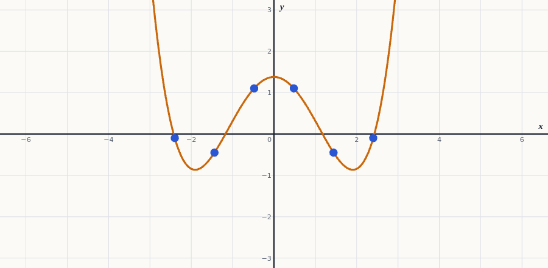

Módulo III · Aplicaciones de la derivada · Tema 3.3
Interpolación polinómica
Cómo encontrar un polinomio que pase exactamente por una lista de puntos, cómo construirlo con la tabla de diferencias divididas de Newton y cuánto se equivoca fuera de los puntos.
Libro oficial: Cálculo para Ingenieros, §3.3 (pp. 119-124)Ejercicios: E Ej. 3.21–3.28 (pp. 107-113)Examen: 9 problemas de X⏱ ~4 h de estudio
U oficial
S Stewart
L Larson
E ejercicios
P propio
X exámenes
— pasa el ratón (o toca) por cada etiqueta para ver libro y página; en pantallas anchas aparecen en el margen derecho.
La idea del tema en una frase
Tienes una tabla de datos (por ejemplo, la temperatura de una habitación a las 0, 1, 2 y 4 horas) y quieres una fórmula que reproduzca esos datos exactamente y que sirva para estimar valores intermedios. Lo más sencillo es unir los puntos con segmentos (una poligonal), pero queda «picuda». Si quieres una curva suave, fácil de construir y de evaluar, lo mejor es un polinomio: el polinomio interpolador. En 3.1 el polinomio de Taylor copiaba a $f$ en un solo punto (usando derivadas); aquí el polinomio copia a $f$ en varios puntos (usando solo valores) y aproxima bien en todo el intervalo.
Si solo tienes un rato, llévate esto. El resto de la página lo desarrolla con ejemplos y ejercicios.
Método en 4 pasos
Identifica qué te piden: razonar sobre el grado o la unicidad, el polinomio (o su valor en un punto), qué cambia al llegar un dato nuevo, una cota del error, o una integral con Simpson o trapecio.
Para el polinomio: escribe nodos y valores y rellena la tabla de izquierda a derecha: cada casilla es (la de abajo $-$ la de arriba) entre (nodo final $-$ nodo inicial del grupo). La diagonal superior da los coeficientes de Newton; el término de orden $m$ lleva $m$ factores $(x-x_0)\cdots(x-x_{m-1})$.
Para un valor: sustituye el punto en la forma de Newton sin desarrollar. Si llega un dato nuevo, ponlo al final y calcula solo las diferencias que lo contienen.
Comprueba: $p(x_k)=f_k$ en dos o tres nodos; el grado es $\le n$ (puede ser menor); y desconfía de evaluar fuera del intervalo de los nodos.
Qué hago según lo que piden
¿«Razona si…» sobre grado o «¿puede haber más de uno?»? $\to$ $m$ datos dan grado $\le m-1$ y un único polinomio; busca un candidato sencillo que pase por los datos.
¿Polinomio por diferencias divididas, o su valor en $a$? $\to$ tabla, diagonal superior, Newton y sustituir $a$.
¿Un dato nuevo o «cuántas diferencias»? $\to$ nodo al final y solo las diferencias que lo contienen.
¿Error, cota o paso de los nodos? $\to$ Lagrange: caso peor de $f^{(n+1)}$ por el producto de distancias a los nodos.
¿Integral con trapecio o Simpson a partir de datos? $\to$ Simpson con 3 nodos es la integral de la parábola interpoladora.
Fórmulas y enunciados, con su «cuándo se usa»
Fórmula o enunciado
Cuándo se usa
$p_n(x_k)=f_k$, $k=0,\dots,n$; existe, es único y tiene grado $\le n$
Preguntas de grado y unicidad (E 3.21-3.23, 3.26).
En los exámenes resueltos son problemas de 3 puntos (o preguntas cortas de 1): casi siempre construir el polinomio con la tabla y evaluarlo, y a menudo después integrarlo con Simpson o trapecio. En el libro de ejercicios son E 3.21-3.28 (cuatro de teoría, tres de cálculo y uno de contar diferencias). Tabla completa por tipo: pestaña Examen.
U pp.119-124P
Camino de estudio: elige tu nivel
Empieza por «Mínimo»; luego «Completo» y, para nota alta, «Reto». Marca cada ejercicio al terminarlo.
Los apartados de unicidad (1), diferencias divididas (2) y forma de Newton (3) y el mapa de decisión (apartado 6).
Un ejercicio de cada tipo:
E 3.21 (grado), E 3.23 (unicidad), E 3.24 (tabla y Newton), E 3.27 (evaluar y añadir un nodo), Examen 1 (datos alineados), Examen 3 (evaluar y Simpson), Examen 7 (decimales) y Examen 8 (nodos no equiespaciados).
Todo el tema (desmarca «Solo lo esencial»), con la forma de Lagrange del error, el interactivo y las demostraciones.
E 3.21-3.28, los 8 exámenes, los ejemplos propios y todas las prácticas.
🟣 Reto · ≈ +1 h
E 3.28 (y su matiz de contar diferencias), Examen 4 (trapecio, Simpson y unicidad), los ejemplos propios P3 y P4 (error de Lagrange frente al redondeo) y las prácticas ★★.
Verás solo lo esencial; desmarca para ver todo.
0Antes de empezar U pp.119-120
Qué necesitas saber ya
Polinomios: grado, raíces, y que un polinomio no nulo de grado $\le n$ tiene como mucho $n$ raíces. P
Teorema de Rolle (solo para el apartado 4, el error). U p.95
Polinomio de Taylor y su resto de Lagrange, para comparar (tema 3.1). U p.111
Mapa del tema: qué se pide en los ejercicios y en el examen
(A) Calcular el polinomio interpolador de 3 o 4 datos con diferencias divididas y, casi siempre, evaluarlo en un punto (E 3.24-3.25, 3.27; X pp.5, 57, 101, 119, 151). (B) Preguntas teóricas de grado y unicidad: ¿el grado es exactamente $n$?, ¿puede haber más de uno? (E 3.21-3.23, 3.26). (C) Añadir un nodo sin repetir la tabla (E 3.27-3.28). (D) Preguntas que mezclan interpolación con trapecio y Simpson del Tema 6 (X pp.65-66, 85, 100, 107). Los splines no se preguntan.
Antes de calcular: dibuja y comprueba
U recomienda representar gráficamente los datos antes de resolver, para anticipar qué tipo de polinomio saldrá, y comprobar el resultado al final, porque «el proceso de interpolación supone realizar diversas operaciones y es fácil equivocarse». La comprobación es barata: sustituye el polinomio en dos o tres nodos y mira que da el dato.
U p.120
1Qué es interpolar: nodos, polinomio interpolador, existencia y unicidad U pp.120-122
Lo que vas a aprender. a decidir cuántos datos hacen falta para fijar un polinomio, a saber que el interpolador es único y de grado $\le n$, y a usar la unicidad para contestar sin calcular.
Cómo lo reconoces: «Razona si es cierto que el interpolador de $m$ puntos es de grado…», «¿puede haber más de un polinomio?», «¿es el polinomio nulo?».
Qué haces: cuentas los datos ($m$ datos $\Rightarrow$ grado $\le m-1$), buscas a ojo un polinomio sencillo que pase por todos (una constante, una recta) y, por la unicidad, ese es el interpolador.
Ejemplo mínimo: los puntos $(0,1),(1,1),(2,1)$: la constante $1$ pasa por los tres y tiene grado $0\le2$; por unicidad, es el interpolador (de «grado 2» no tiene nada).
Idea intuitiva
Dos puntos determinan una recta; tres puntos (no alineados), una parábola; cuatro, una cúbica. En general, $n+1$ puntos con abscisas distintas determinan un único polinomio de grado $\le n$ que pasa por todos ellos. Es como un ajuste «a medida» sin sobrantes: tantos datos como coeficientes libres ($a_0,\dots,a_n$ son $n+1$ números).
U pp.120-121
Definición · nodos y polinomio interpolador
Se dispone de datos $(x_k,f_k)$ para $k=0,\dots,n$. Los números $x_k$ (distintos) se llaman nodos y $f_k$ es el valor de la función $f(x)$ en $x_k$. Se busca un polinomio
$$p_n(x)=a_0+a_1x+\cdots+a_nx^n\quad\text{tal que}\quad p_n(x_k)=f_k,\ \ k=0,\dots,n.$$
Ese $p_n$ se llama polinomio de interpolación o polinomio interpolador.
U pp.120-121
Propiedad · sistema lineal, grado máximo, existencia y unicidad
Las $n+1$ condiciones $p_n(x_k)=f_k$ forman un sistema de $n+1$ ecuaciones lineales con $n+1$ incógnitas $a_0,\dots,a_n$. Por eso el grado de $p_n$ es $n$ como máximo (puede ser menor). El polinomio existe y es único. La existencia se prueba construyéndolo con diferencias divididas de Newton (apartados 2-3).
U p.121
Por qué es único (argumento propio)
Si $p$ y $q$ tienen grado $\le n$ y coinciden en los $n+1$ nodos, su diferencia $d=p-q$ tiene grado $\le n$ y se anula en $n+1$ puntos distintos. Un polinomio no nulo de grado $\le n$ tiene como mucho $n$ raíces (cada raíz $r$ aporta un factor $(x-r)$ y no caben más de $n$ factores). Luego $d\equiv0$ y $p=q$.
Consecuencia práctica, la usarás mucho: si encuentras de cualquier forma (a ojo, porque los puntos están alineados, etc.) un polinomio de grado $\le n$ que pase por los $n+1$ datos, ese es el interpolador. No hay otro.
P
Error típico · «n+1 datos ⇒ grado exactamente n»
«Grado $n$» es el máximo, no lo obligatorio. Con tres puntos alineados el interpolador es una recta (grado 1), no una parábola. En el Ej. 3.18 «su grado es 3, porque tenemos 4 datos» es cierto porque la última diferencia dividida vale $\frac1{12}\neq0$. Lo seguro es «grado $\le3$».
U p.124
Resolver el sistema es posible, pero pesado
Con 2 o 3 datos puedes plantear el sistema y resolverlo a mano (lo haces en el ejemplo P1). Con 4 o más, «la resolución de este sistema … puede ser una tarea ardua»; por eso se usa el método de las diferencias divididas de Newton, que no necesita resolver ningún sistema.
U p.121
Ejemplo 3.16 de U · una recta y una parábola
Temperatura de una habitación al encender la calefacción: $x_k=0,1$ (horas) y $f_k=15,18$ (grados).
Recta por dos puntos. La recta por $(x_0,f_0)$ con pendiente $m$ es $p_1(x)-f_0=m(x-x_0)$. Aquí $m=\frac{f_1-f_0}{x_1-x_0}=\frac{18-15}{1-0}=3$.
Resultado: $p_1(x)=15+3x$. Esa pendiente $m$ aproxima la derivada de $f$, en analogía con el polinomio de Taylor de orden 1.
Un tercer dato $(2,20)$. Se parte de $p_1$ y se suma un término que no estropea los datos anteriores (se anula en $0$ y en $1$): $p_2(x)=3x+15-\tfrac12\,x(x-1)$. El número $-\tfrac12$ se fija con el nuevo dato y aproxima la derivada segunda.
Comprobación (U la deja al lector): $p_2(0)=15$, $p_2(1)=18$, $p_2(2)=6+15-1=20$. ✓
Este «ir añadiendo un término que no estropea lo anterior» es exactamente el método de Newton del apartado 3.
La recta $p_1$ pasa por los dos primeros datos; la parábola $p_2$ por los tres. Pasa el ratón por la gráfica (o toca; o usa ← →) para leer las coordenadas. PU pp.121-122
2Diferencias divididas y tabla de diferencias U p.123
Lo que vas a aprender. a rellenar una tabla de diferencias divididas sin equivocarte de denominador ni de signo.
Cómo lo reconoces: «Mediante diferencias divididas…», «construye la tabla de diferencias».
Qué haces: columna a columna, cada casilla es (la de abajo $-$ la de arriba) entre (nodo final $-$ nodo inicial del grupo), con los nodos de los extremos, no los vecinos.
Ejemplo mínimo: nodos $0,1,3$ y valores $2,3,11$: $f[0,1]=\frac{3-2}{1-0}=1$, $f[1,3]=\frac{11-3}{3-1}=4$ y $f[0,1,3]=\frac{4-1}{3-0}=1$.
Idea intuitiva
Una diferencia dividida de orden 1 es una pendiente (cociente incremental entre dos nodos). Una de orden 2 es la «pendiente de las pendientes»: mide cuánto se curva la gráfica. Una de orden 3, cómo cambia esa curvatura, y así sucesivamente. U lo dice con otras palabras: las diferencias divididas «son una aproximación de la derivada de orden $m$». Cada una se calcula con las del orden anterior, y se organizan en una tabla.
U pp.122-123
Definición · diferencias divididas
Orden 0: $f[x_k]=f_k$ (el valor de la función en el nodo). Orden 1: $\displaystyle f[x_k,x_{k+1}]=\frac{f[x_{k+1}]-f[x_k]}{x_{k+1}-x_k}=\frac{f_{k+1}-f_k}{x_{k+1}-x_k}.$ Orden $m$ (recursiva):
$$f[x_k,\dots,x_{k+m}]=\frac{f[x_{k+1},\dots,x_{k+m}]-f[x_k,\dots,x_{k+m-1}]}{x_{k+m}-x_k}.$$
U p.123
Cómo leer la fórmula (para no equivocarte)
Numerador: «la casilla de la columna anterior de abajo menos la de arriba». Denominador: el nodo más alto menos el nodo más bajo del grupo que abarca la casilla (los de los extremos, no los vecinos). Dos fallos típicos: dividir entre nodos vecinos en el orden 2 o 3, y restar «arriba menos abajo», que cambia el signo de toda la tabla. La forma más sencilla de calcularlas es en una tabla, la tabla de diferencias.
U p.123
Ejemplo 3.17 de U · tabla de diferencias
Datos: $x_k=0,1,2,4$ y $f_k=15,18,20,23$ (temperatura a distintas horas).
Cómo leer la escalera: cada flecha sale de las dos casillas de la columna anterior con las que se calcula la casilla de su derecha (la de abajo menos la de arriba, sobre la diferencia de nodos extremos). Con borde azul, la diagonal superior ($15,\ 3,\ -\frac12,\ \frac1{12}$): son las que se usan para construir el polinomio. Fíjate en los denominadores del orden 2: $2-0$ y $4-1$, los nodos de los extremos de cada grupo de tres.
U p.123
3La forma de Newton del polinomio interpolador U p.124
Lo que vas a aprender. a escribir el polinomio de Newton con la diagonal superior, a evaluarlo sin desarrollar y a añadir un nodo sin rehacer la tabla.
Cómo lo reconoces: «Determina el polinomio que interpola…», «aproxima $f(a)$», «llega un dato adicional».
Qué haces: tomas la diagonal superior, multiplicas cada diferencia por los factores $(x-x_0)(x-x_1)\cdots$ (uno más en cada término) y sustituyes el punto pedido sin desarrollar; con un dato nuevo, lo pones al final y calculas solo la diagonal inferior.
Ejemplo mínimo: con la diagonal $2,1,1$ en los nodos $0,1,3$: $p(x)=2+x+x(x-1)$, y $p(2)=2+2+2=6$ sin desarrollar (coincide con $x^2+2$ en $x=2$).
Idea intuitiva · el polinomio «por capas»
Se construye apilando capas. Capa 0: una constante que acierta en $x_0$. Capa 1: una recta que lleva el factor $(x-x_0)$, así que vale 0 en $x_0$ (no estropea la capa 0) y se ajusta para acertar en $x_1$. Capa 2: una parábola con factor $(x-x_0)(x-x_1)$, que no toca los dos primeros nodos y acierta en $x_2$. Y así hasta el último dato. El coeficiente de cada capa es una diferencia dividida de la diagonal superior.
U pp.121-124
Fórmula de Newton
$$\begin{aligned}p_n(x)&=f[x_0]+f[x_0,x_1](x-x_0)+f[x_0,x_1,x_2](x-x_0)(x-x_1)+\cdots\\&\quad+f[x_0,\dots,x_n](x-x_0)(x-x_1)\cdots(x-x_{n-1}).\end{aligned}$$
El término de orden $m$ lleva $m$ factores: $(x-x_0)\cdots(x-x_{m-1})$. El último factor es $(x-x_{m-1})$, no $(x-x_m)$.
U p.124
Ejemplo 3.18 de U · el polinomio de los datos del Ej. 3.17
Diagonal superior del Ej. 3.17: $15,\ 3,\ -\frac12,\ \frac1{12}$.
Pasa el ratón por la gráfica (o toca; o usa ← →) para leer las coordenadas. P
Ejemplo de clase · tabla en escalera con cuatro nodos $(-2,-35),(-1,-11),(1,-5),(3,25)$
Halla el polinomio de grado $\le3$ que pasa por estos cuatro puntos.
Antes de calcular
Qué me piden
El polinomio interpolador de $x_k=-2,-1,1,3$ con $f(x_k)=-35,-11,-5,25$.
Cómo lo pienso
Cuatro puntos con $x$ distintas: hay un único polinomio de grado $\le3$. Se construye con la tabla de diferencias divididas, columna a columna.
Qué uso
Diferencias divididas (U p. 123) y forma de Newton (U p. 124).
Por dónde empiezo
Escribo $x_k$ y $f[x_k]$ en columnas y calculo la primera columna de cocientes.
Tabla en escalera. Escribo los nodos y los valores y relleno de izquierda a derecha. Cada casilla es (la de abajo − la de arriba) entre (nodo final − nodo inicial del grupo); las flechas unen cada casilla con las dos de las que sale; en azul, la diagonal superior:
Fórmula de Newton (grado 3): $p_3(x)=f[x_0]+f[x_0,x_1](x-x_0)+f[x_0,x_1,x_2](x-x_0)(x-x_1)+f[x_0,x_1,x_2,x_3](x-x_0)(x-x_1)(x-x_2)$
Sustituyo la diagonal $-35,\ 24,\ -7,\ 2$ y los nodos $-2,-1,1$: $p_3(x)=-35+24(x+2)-7(x+2)(x+1)+2(x+2)(x+1)(x-1)$.
Desarrollo término a término: $24(x+2)=24x+48$; $-7(x+2)(x+1)=-7x^2-21x-14$; $2(x+2)(x+1)(x-1)=2x^3+4x^2-2x-4$. Sumando: $p_3(x)=2x^3-3x^2+x-5$.
Pasa el ratón por la gráfica (o toca; o usa ← →) para leer las coordenadas. P
Receta: escribe la tabla en escalera dejando siempre una casilla entre dos filas; cada flecha entra en una casilla desde dos vecinas. La diagonal superior son los coeficientes de Newton; los factores $(x-x_k)$ se añaden de uno en uno.
P clase
Añadir un nodo sin empezar de nuevo
$p_n(x)=p_{n-1}(x)+f[x_0,\dots,x_n]\,(x-x_0)\cdots(x-x_{n-1})$. «Al añadir un nuevo nodo no hace falta empezar todo el proceso de nuevo, basta con calcular las diferencias que nos faltan (que son las diferencias donde está $x_n$) y añadir este nuevo término.» El polinomio viejo se conserva; el término nuevo se anula en todos los nodos viejos.
U p.124
El orden de los nodos no importa
$f[x_0,\dots,x_m]$ es el coeficiente de $x^m$ del interpolador de esos $m+1$ datos (en la forma de Newton solo el último término tiene $x^m$), y ese polinomio es único sea cual sea el orden en que se listen. Por eso los nodos no tienen que estar ordenados en la tabla, y un nodo nuevo se puede poner siempre al final de la lista. Lo usa el ejercicio 3.28.
P
Truco de examen · evaluar sin desarrollar
Si te piden $p(a)$ para un valor concreto (casi siempre), sustituye $a$ directamente en la forma de Newton y no desarrolles el polinomio: son menos cuentas y menos errores (y, con decimales, menos redondeo). Desarrolla en potencias de $x$ solo si el enunciado lo pide.
P
4Cuánto se equivoca el interpolador: forma de Lagrange del error P
Lo que vas a aprender. a acotar el error de interpolar en un punto con la forma de Lagrange y a entender por qué extrapolar es peligroso.
Cómo lo reconoces: «Acota el error», «¿con qué precisión?», un valor fuera del intervalo de los nodos, o elegir el paso de una tabla.
Qué haces: cuentas los nodos ($n+1$), tomas $M=\max|f^{(n+1)}|$ en el intervalo (caso peor), calculas el producto de las distancias de $x$ a todos los nodos y divides entre $(n+1)!$.
Ejemplo mínimo: $\operatorname{sen}x$ en los nodos $0$ y $\frac\pi2$ y el punto $\frac\pi4$: $|f''|\le1$, producto $\frac\pi4\cdot\frac\pi4$, luego el error es $\le\frac{1}{2}\cdot\frac{\pi^2}{16}=\frac{\pi^2}{32}\approx0{,}31$.
Forma de Lagrange del error de interpolación (P)
Sea $f$ con derivada de orden $n+1$ en un intervalo $I$ que contiene los nodos distintos $x_0,\dots,x_n$ y el punto $x$, y sea $p_n$ el interpolador. Existe $\xi\in I$ (entre el menor y el mayor de $x,x_0,\dots,x_n$) tal que
$$f(x)-p_n(x)=\frac{f^{(n+1)}(\xi)}{(n+1)!}\,(x-x_0)(x-x_1)\cdots(x-x_n).$$
Si $|f^{(n+1)}|\le M$ en $I$, entonces $\ |f(x)-p_n(x)|\le\dfrac{M}{(n+1)!}\,|x-x_0|\cdots|x-x_n|.$
P
Comparación con Taylor
Taylor: $\frac{f^{(n+1)}(c)}{(n+1)!}(x-x_0)^{n+1}$, con toda la información concentrada en un punto. Interpolación: el mismo $\frac{f^{(n+1)}}{(n+1)!}$, pero la potencia se reparte entre los $n+1$ nodos. El producto vale 0 en cada nodo (el interpolador es exacto allí) y es grande lejos de ellos: por eso extrapolar (evaluar fuera del intervalo de los nodos) es peligroso.
U p.111

Interactivo propio. Nodos libres: arrastra los puntos azules y el polinomio interpolador (naranja) pasa siempre por todos; al subir el número de nodos oscila más entre ellos. Runge: con la función $\frac1{1+25x^2}$ (gris, discontinua) y nodos equiespaciados, aumentar $n$ empeora el error cerca de los extremos (con 11 nodos el error máximo es $\approx1{,}92$); con los nodos de Chebyshev el error baja (con 11 nodos, $\approx0{,}11$). Es la razón de que el factor $(x-x_0)\cdots(x-x_n)$ del error de Lagrange importe tanto como la derivada. P
Por qué es cierta: esquema con Rolle
Si $x$ es un nodo ambos lados valen 0. Supongamos que no lo es.
Sea $w(t)=(t-x_0)\cdots(t-x_n)$ y elige $K$ con $f(x)-p_n(x)=K\,w(x)$ (posible, porque $w(x)\neq0$). Hay que ver que $K=\frac{f^{(n+1)}(\xi)}{(n+1)!}$ para algún $\xi$.
La función $g(t)=f(t)-p_n(t)-K\,w(t)$ se anula en los $n+1$ nodos y en $t=x$: $n+2$ ceros.
Rolle entre ceros consecutivos: $g'$ tiene al menos $n+1$ ceros; $g''$, al menos $n$; … ; $g^{(n+1)}$, al menos uno, $\xi$.
Derivando $n+1$ veces: $p_n^{(n+1)}=0$ (grado $\le n$) y $w^{(n+1)}=(n+1)!$. Así $g^{(n+1)}(t)=f^{(n+1)}(t)-K\,(n+1)!$.
En $\xi$: $0=f^{(n+1)}(\xi)-K(n+1)!$, o sea $K=\frac{f^{(n+1)}(\xi)}{(n+1)!}$. ∎
Caso particular: si $f$ es un polinomio de grado $\le n$, $f^{(n+1)}=0$ y el error es 0, es decir, el interpolador es $f$ (otra forma de ver la unicidad).
P
5Fuera de examen: splines U p.121
Fuera de examen: splines (recuadro de U, p. 121)
Si los datos no son suaves y se sube el grado del polinomio, la curva puede oscilar mucho entre los datos. Una alternativa son los splines: polinomios a trozos (de grado bajo en cada tramo entre nodos) con condiciones de derivabilidad en los nodos para que la curva salga suave. No aparece en las preguntas de X ni en E.
6Mapa de decisión: qué hago según lo que me piden P
Lo que vas a aprender. qué hacer según lo que te pidan (grado y unicidad, polinomio o valor, dato nuevo, error o integral) con un mapa de decisión y, desplegable, una tabla con el detalle de cada caso.
Léelo de arriba abajo: en cada pregunta, «no» baja a la siguiente y «sí» te lleva a la acción de la derecha. Las preguntas se pueden combinar en un mismo problema (por ejemplo, polinomio $\to$ valor $\to$ integral con Simpson): contesta a cada apartado por separado.
Ver la tabla con el detalle de cada caso
Piden…
Herramienta
Ojo con…
¿Grado exactamente $n$?, ¿hay más de un interpolador?, ¿es el nulo?
$m$ datos $\Rightarrow$ grado $\le m-1$ y único; candidato + unicidad
«Grado $\le n$» no es «grado $n$»; los ceros de $f$ no son los nodos
Polinomio por diferencias divididas
Tabla, diagonal superior, Newton
Denominador con los nodos extremos; último factor $(x-x_{m-1})$
Valor $p(a)$
Sustituir $a$ en la forma de Newton
Signo de $(a-x_k)$ si $a<x_k$; no desarrollar
Dato nuevo, o cuántas diferencias
Nodo al final, diagonal inferior, $p_n=p_{n-1}+\dots$
No rehacer la tabla; con el nodo en medio y ordenado salen más (E 3.28)
Error o cota en un punto
$\frac{M}{(n+1)!}\prod|x-x_k|$
El producto lleva todos los nodos; si los datos están redondeados, suma su error
Paso $h$ para una tabla (interpolar linealmente)
$\frac{M}{2}\cdot\frac{h^2}{4}<\varepsilon$ y despejar $h$
$M=\max|f''|$ en todo el intervalo
Integral con Simpson (3 nodos) o trapecio
$\int_a^bp_2$ = Simpson; poligonal = trapecio
Simpson usa el punto medio; el trapecio, solo los extremos
Método en cinco pasos para el examen
Traduce lo que piden a una fila del mapa (puede haber varias).
Ordena los datos (nodos y valores en dos columnas) y cuenta cuántos hay: $n+1$ nodos, grado $\le n$.
Construye la tabla y copia la diagonal superior.
Escribe Newton y evalúalo en el punto pedido sin desarrollar (o intégralo, si te piden Simpson).
Comprueba: sustituye en dos o tres nodos y mira que da el dato.
P
7Practica P
Lo que vas a aprender. a resolver tú solo un ejemplo de cada tipo. Intenta cada uno antes de abrir la pista; empieza por los ★ (los ★★ son ampliación).
Ahora hazlo tú
Primero decide qué te piden: el polinomio (tabla de diferencias y Newton; con 2-3 datos también vale el sistema), un valor (sustituir en la forma de Newton sin desarrollar), un dato nuevo (solo las diferencias que lo contienen) o un error (forma de Lagrange: derivada $n+1$ en el caso peor por el producto de distancias a los nodos).
Sistema lineal, grado y unicidad
★ Básico Práctica a1 · parábola por tres puntos con el sistema P
Halla, planteando el sistema lineal, el polinomio de grado $\le2$ que pasa por $(0,1)$, $(1,3)$ y $(2,7)$.
Pista
Escribe $p_2(x)=a_0+a_1x+a_2x^2$ e impón una ecuación por dato. El dato en $x=0$ da $a_0$ directamente.
Ver solución
Planteamiento: $3$ datos, $n=2$; se busca $p_2(x)=a_0+a_1x+a_2x^2$ con $p_2(x_k)=f_k$ (U p.121).
Sustituir $a_0=1$: $a_1+a_2=2$ y $2a_1+4a_2=6$, es decir, $a_1+2a_2=3$.
Restar la primera de la segunda: $a_2=1$, y entonces $a_1=1$.
Comprobación: $p_2(0)=1$, $p_2(1)=3$, $p_2(2)=4+2+1=7$ ✓. Por la unicidad (U p.121) no hay otro de grado $\le2$.
Resultado: $p_2(x)=x^2+x+1$
★★ Medio Práctica a2 · ¿qué $a$ baja el grado? P
Se interpolan los datos $(0,1)$, $(1,a)$, $(2,5)$, $(3,10)$. ¿Para qué valor de $a$ el polinomio interpolador tiene grado $\le2$? Halla ese polinomio.
Pista
En la forma de Newton, el coeficiente de $x^3$ es la diferencia dividida de orden $3$, $f[x_0,x_1,x_2,x_3]$. Calcula la tabla dejando $a$ como letra e iguala esa casilla a $0$.
Ver solución
Idea: con $4$ datos el interpolador tiene grado $\le3$ (U p.121); en la forma de Newton (U p.124) solo el último término $f[x_0,\dots,x_3](x-0)(x-1)(x-2)$ tiene $x^3$. El grado es $\le2$ si y solo si esa diferencia vale $0$.
Orden 1 (nodos a distancia $1$, U p.123): $a-1$, $5-a$, $10-5=5$.
Orden 2 (denominador $2$): $\frac{(5-a)-(a-1)}{2}=3-a$ y $\frac{5-(5-a)}{2}=\frac a2$.
Orden 3 (denominador $3-0=3$): $\frac{\frac a2-(3-a)}{3}=\frac{\frac32a-3}{3}=\frac a2-1$.
Imponer $\frac a2-1=0$: $a=2$.
Polinomio con $a=2$: diagonal $1,\ 1,\ 1,\ 0$, luego $p(x)=1+x+x(x-1)=x^2+1$. Comprobación: $1,2,5,10$ en $0,1,2,3$ ✓.
Resultado: $a=2$; $p(x)=x^2+1$
Tabla de diferencias divididas y forma de Newton
★ Básico Práctica b1 · tres nodos no equiespaciados P
Mediante diferencias divididas, halla el polinomio interpolador de los datos $x_k=0,1,3$; $f(x_k)=2,3,11$.
Pista
Los nodos no están a la misma distancia: en el orden $1$ divide entre $1-0$ y $3-1$; en el orden $2$, entre los nodos de los extremos, $3-0$.
Ver solución
Orden 1 (U p.123): $f[0,1]=\frac{3-2}{1-0}=1$; $f[1,3]=\frac{11-3}{3-1}=4$.
Orden 2: $f[0,1,3]=\frac{4-1}{3-0}=1$ (extremos del grupo, no vecinos).
Diagonal superior: $2,\ 1,\ 1$.
Newton (U p.124): $p_2(x)=2+1\cdot(x-0)+1\cdot(x-0)(x-1)=2+x+x^2-x$.
Comprobación: $p_2(3)=9+2=11$ ✓.
Resultado: $p_2(x)=2+x+x(x-1)=x^2+2$
★★ Medio Práctica b2 · cuatro nodos: Newton y desarrollado P
Determina por diferencias divididas el polinomio de grado $\le3$ que interpola los datos $x_k=-1,0,2,3$; $f(x_k)=-2,1,1,10$. Escríbelo en forma de Newton y desarrollado en potencias de $x$.
Pista
Denominadores: orden 1, $1,2,1$; orden 2, $2-(-1)=3$ y $3-0=3$; orden 3, $3-(-1)=4$. Cuidado con los signos al restar números negativos.
Ver solución
Orden 1 (U p.123): $\frac{1-(-2)}{0-(-1)}=3$; $\frac{1-1}{2-0}=0$; $\frac{10-1}{3-2}=9$.
Orden 2: $\frac{0-3}{2-(-1)}=-1$; $\frac{9-0}{3-0}=3$.
Orden 3: $\frac{3-(-1)}{3-(-1)}=1$.
Newton con la diagonal $-2,\ 3,\ -1,\ 1$ (U p.124): $p_3(x)=-2+3(x+1)-(x+1)x+(x+1)x(x-2)$.
Estimar un valor con el interpolador (y el peligro de extrapolar)
★ Básico Práctica c1 · estimar $f(3)$ sin desarrollar P
De una función se sabe que $f(1)=4$, $f(2)=7$ y $f(4)=19$. Estima $f(3)$ con el polinomio interpolador.
Pista
Haz la tabla, escribe la forma de Newton y sustituye $x=3$ directamente: no hace falta desarrollar.
Ver solución
Orden 1 (U p.123): $\frac{7-4}{2-1}=3$; $\frac{19-7}{4-2}=6$.
Orden 2: $\frac{6-3}{4-1}=1$.
Newton (U p.124): $p_2(x)=4+3(x-1)+(x-1)(x-2)$.
Evaluar en $3$ (factores $x-1=2$, $x-2=1$): $p_2(3)=4+3\cdot2+2\cdot1=12$.
Por qué es razonable: $3$ está dentro de $[1,4]$, el intervalo de los nodos (es interpolar, no extrapolar).
Resultado: $f(3)\approx p_2(3)=12$
★★ Medio Práctica c2 · $\sqrt5$ con los nodos $1,4,9$ (y $p(16)$) P
Interpola $f(x)=\sqrt x$ en los nodos $1,4,9$. (a) Estima $\sqrt5$ y compara con el valor real. (b) Usa el mismo polinomio para estimar $\sqrt{16}$. ¿Qué observas?
Pista
Los valores son enteros: $1,2,3$. En (b), $16$ está fuera de $[1,9]$: es extrapolar.
Ver solución
Datos: $(1,1)$, $(4,2)$, $(9,3)$.
Orden 1 (U p.123): $\frac{2-1}{4-1}=\frac13$; $\frac{3-2}{9-4}=\frac15$.
Orden 2: $\frac{\frac15-\frac13}{9-1}=\frac{-\frac2{15}}{8}=-\frac1{60}$.
Newton (U p.124): $p_2(x)=1+\frac13(x-1)-\frac1{60}(x-1)(x-4)$.
(a) En $x=5$ (factores $4$ y $1$): $p_2(5)=1+\frac43-\frac4{60}=\frac{15+20-1}{15}=\frac{34}{15}\approx2{,}2667$. Real: $\sqrt5\approx2{,}2361$; error $\approx0{,}031$.
(b) En $x=16$ (factores $15$ y $12$): $p_2(16)=1+5-\frac{180}{60}=3$, cuando $\sqrt{16}=4$.
Observación: dentro de $[1,9]$ el error es pequeño; fuera, el producto $(x-1)(x-4)(x-9)$ de la forma de Lagrange del error (apartado 4) crece mucho y la estimación no sirve.
★ Básico Práctica d1 · un nodo nuevo en medio, puesto al final P
Al interpolar $(0,2)$, $(1,3)$, $(3,11)$ se obtiene $p_2(x)=x^2+2$ (práctica b1). Llega el dato $(2,4)$. Halla el nuevo interpolador $p_3$ sin rehacer la tabla.
Pista
Pon el nodo nuevo al final de la lista ($x_3=2$), aunque no quede ordenado: las diferencias divididas no dependen del orden. Solo faltan las tres que contienen a $x_3$.
Ver solución
Orden de los nodos: $x_0=0$, $x_1=1$, $x_2=3$, $x_3=2$ (el orden no importa, apartado 3; se reutiliza la tabla vieja: $1,4$ y $1$).
Diferencias nuevas (U p.124: solo las que contienen $x_3$): $f[x_2,x_3]=\frac{4-11}{2-3}=7$; $f[x_1,x_2,x_3]=\frac{7-4}{2-1}=3$; $f[x_0,\dots,x_3]=\frac{3-1}{2-0}=1$.
Término nuevo (U p.124): $1\cdot(x-0)(x-1)(x-3)$, que se anula en los nodos viejos.
★★ Medio Práctica d2 · ¿cuánto cambia la estimación con un dato más? P
Con $f(1)=4$, $f(2)=7$, $f(4)=19$ se estimó $f(3)\approx12$ (práctica c1). Se conoce además $f(5)=25$. Recalcula la estimación de $f(3)$ con los cuatro datos. ¿Cuántas diferencias divididas nuevas has tenido que calcular?
Pista
Con el nodo nuevo al final, $p_3(x)=p_2(x)+f[x_0,\dots,x_3](x-1)(x-2)(x-4)$. Basta con la nueva diagonal inferior y evaluar el término nuevo en $3$.
Ver solución
Tabla vieja (c1): orden 1: $3,6$; orden 2: $1$; $p_2(3)=12$.
Nuevas (U p.124): $f[4,5]=\frac{25-19}{5-4}=6$; $f[2,4,5]=\frac{6-6}{5-2}=0$; $f[1,2,4,5]=\frac{0-1}{5-1}=-\frac14$. Son $3$ (tantas como nodos había).
★ Básico Práctica e1 · $\frac1x$ por una recta: signo y tamaño del error P
Se interpola $f(x)=\frac1x$ en los nodos $1$ y $2$. (a) Halla la recta $p_1$ y estima $f(1{,}5)$. (b) Con la forma de Lagrange del error, acota $f(1{,}5)-p_1(1{,}5)$ y di su signo. Compara con el error real.
Pista
Con $2$ nodos ($n=1$) el error lleva $\frac{f''(\xi)}{2!}(x-1)(x-2)$, con $\xi\in(1,2)$. $f''(x)=\frac2{x^3}$ es positiva y decreciente.
Ver solución
Recta (U p.123-124): $f[1,2]=\frac{\frac12-1}{2-1}=-\frac12$, $p_1(x)=1-\frac12(x-1)$; $p_1(1{,}5)=0{,}75$.
Forma del error (apartado 4): $f(1{,}5)-p_1(1{,}5)=\frac{f''(\xi)}{2}(1{,}5-1)(1{,}5-2)=\frac{1}{\xi^3}\cdot(-0{,}25)$, con $\xi\in(1,2)$.
Signo: $\frac1{\xi^3}>0$ y el producto es negativo: el error es negativo (la recta queda por encima de la curva).
Tamaño: $\frac1{\xi^3}$ es decreciente, vale entre $\frac18$ y $1$: $-0{,}25\le f(1{,}5)-p_1(1{,}5)\le-0{,}03125$.
Real: $\frac1{1{,}5}-0{,}75=\frac23-\frac34=-\frac1{12}\approx-0{,}0833$, dentro del intervalo ✓.
Resultado: $p_1(1{,}5)=0{,}75$; $-0{,}25\le f(1{,}5)-p_1(1{,}5)\le-0{,}03125$ (error real $-\frac1{12}$)
★★ Medio Práctica e2 · $\operatorname{sen}\frac\pi4$ con tres nodos P
Interpola $f(x)=\operatorname{sen}x$ en los nodos $0,\frac\pi6,\frac\pi2$, estima $\operatorname{sen}\frac\pi4$ y acota el error con la forma de Lagrange.
Pista
Valores $0,\frac12,1$. En la tabla, el $\pi$ de los denominadores se arrastra; al evaluar en $\frac\pi4$ se simplifica. Para el error: $f'''=-\cos x$ y $|\cos\xi|\le1$.
Ver solución
Orden 1 (U p.123): $\frac{\frac12-0}{\frac\pi6}=\frac3\pi$; $\frac{1-\frac12}{\frac\pi2-\frac\pi6}=\frac{\frac12}{\frac\pi3}=\frac3{2\pi}$.
Orden 2: $\frac{\frac3{2\pi}-\frac3\pi}{\frac\pi2-0}=-\frac3{2\pi}\cdot\frac2\pi=-\frac3{\pi^2}$.
Newton (U p.124): $p_2(x)=\frac3\pi x-\frac3{\pi^2}x\left(x-\frac\pi6\right)$.
En $\frac\pi4$ (factores $\frac\pi4$ y $\frac\pi{12}$): $p_2(\frac\pi4)=\frac34-\frac3{\pi^2}\cdot\frac{\pi^2}{48}=\frac34-\frac1{16}=\frac{11}{16}=0{,}6875$.
Error (apartado 4, $n=2$): $\operatorname{sen}\frac\pi4-p_2(\frac\pi4)=\frac{-\cos\xi}{3!}\cdot\frac\pi4\cdot\frac\pi{12}\cdot\left(-\frac\pi4\right)=\frac{\cos\xi\,\pi^3}{1152}$, con $\xi\in(0,\frac\pi2)$.
Cota: $0<\cos\xi<1$ en ese intervalo: $0<\text{error}<\frac{\pi^3}{1152}\approx0{,}0269$ (el interpolador se queda por debajo).
Resultado: $\operatorname{sen}\frac\pi4\approx\frac{11}{16}=0{,}6875$, con $0<\text{error}<\frac{\pi^3}{1152}\approx0{,}0269$
Cota del error en un intervalo: elegir el paso de los nodos
★ Básico Práctica f1 · tabla de $e^x$ con paso $0{,}1$ P
Se tiene una tabla de $e^x$ en $0;\ 0{,}1;\ 0{,}2;\dots;\ 1$ y, para un $x$ intermedio, se interpola linealmente entre los dos nodos vecinos. Acota el error para cualquier $x\in[0,1]$.
Pista
Entre dos nodos $a$ y $b=a+h$, el error es $\frac{f''(\xi)}{2}(x-a)(x-b)$. La parábola $(x-a)(x-b)$ alcanza su valor absoluto máximo en el punto medio: $\left(\frac h2\right)^2$.
Ver solución
Forma del error (apartado 4, $n=1$): $|e^x-p_1(x)|=\frac{e^\xi}{2}|x-a|\,|x-b|$, con $\xi\in(a,b)\subset[0,1]$.
Derivada: $e^\xi\le e^1=e$ (la exponencial es creciente).
Producto: $(x-a)(x-b)$ es una parábola que se anula en $a$ y $b$; su vértice está en el punto medio, donde $|x-a|\,|x-b|=\frac h2\cdot\frac h2=\frac{h^2}4$.
★★ Medio Práctica f2 · ¿qué paso hace falta para $\cos x$? P
Se quiere tabular $\cos x$ en $[0,\frac\pi2]$ con nodos equiespaciados de paso $h$ para interpolar linealmente entre nodos vecinos con error menor que $10^{-6}$. ¿Qué $h$ máximo se puede tomar? ¿Cuántos subintervalos hacen falta como mínimo?
Pista
Mismo razonamiento que en f1: error $\le\frac{M}{2}\cdot\frac{h^2}4$ con $M=\max|f''|$. Despeja $h$ y luego $N\ge\frac{\pi/2}{h}$.
Ver solución
Derivada: $f''(x)=-\cos x$, $|f''|\le1$: $M=1$.
Cota (apartado 4 y vértice de la parábola, práctica f1): $|\cos x-p_1(x)|\le\frac{h^2}{8}$.
★ Básico Práctica g1 · la diferencia de orden 2 de una parábola P
Sea $f(x)=3x^2-5x+1$. Sin hacer la tabla, ¿cuánto vale $f[x_0,x_1,x_2]$ para nodos distintos cualesquiera? Compruébalo con los nodos $0,2,7$.
Pista
Con $3$ nodos, el interpolador de una parábola es la propia parábola (unicidad). En la forma de Newton, el coeficiente de $x^2$ es $f[x_0,x_1,x_2]$.
Ver solución
Unicidad (U p.121): $f$ tiene grado $2\le2$ y pasa por los tres datos, así que es su interpolador.
Coeficiente líder: en $p_2(x)=f[x_0]+f[x_0,x_1](x-x_0)+f[x_0,x_1,x_2](x-x_0)(x-x_1)$ (U p.124) solo el último término tiene $x^2$, con coeficiente $f[x_0,x_1,x_2]$. Igualando con $3x^2-5x+1$: $f[x_0,x_1,x_2]=3$.
Comprobación con $0,2,7$: valores $1,3,113$; orden 1: $\frac{3-1}{2}=1$, $\frac{113-3}{5}=22$; orden 2: $\frac{22-1}{7-0}=3$ ✓.
Resultado: $f[x_0,x_1,x_2]=3$ para cualesquiera nodos
★★ Medio Práctica g2 · diferencias de $x^3$ sin tabla P
Sea $f(x)=x^3$ y los nodos $1,2,4,5$. Sin hacer la tabla, calcula $f[1,2,4,5]$ y $f[1,2,4]$. Comprueba después con la tabla.
Pista
Orden 3: el interpolador de $x^3$ con $4$ nodos es $x^3$. Orden 2: el interpolador de $x^3$ en $a,b,c$ es $x^3-(x-a)(x-b)(x-c)$ (¿por qué?); mira su coeficiente de $x^2$.
Ver solución
Orden 3: con $4$ nodos, $x^3$ es su propio interpolador (U p.121), y el coeficiente de $x^3$ en la forma de Newton (U p.124) es $f[1,2,4,5]$: vale $1$.
Orden 2, candidato: $q(x)=x^3-(x-1)(x-2)(x-4)$. El producto se anula en $1,2,4$, así que $q$ toma los mismos valores que $x^3$ en esos nodos; y los $x^3$ se cancelan, luego $q$ tiene grado $\le2$.
Por unicidad $q$ es el interpolador de $x^3$ en $1,2,4$. Como $(x-1)(x-2)(x-4)=x^3-7x^2+\dots$, $q(x)=7x^2+\dots$, y el coeficiente de $x^2$ es $f[1,2,4]=1+2+4=7$.
Tabla: valores $1,8,64,125$; orden 1: $7,28,61$; orden 2: $\frac{28-7}{3}=7$, $\frac{61-28}{3}=11$; orden 3: $\frac{11-7}{4}=1$ ✓.
Resultado: $f[1,2,4,5]=1$; $f[1,2,4]=1+2+4=7$
8Errores típicos y autoevaluación P
Lo que vas a aprender. a detectar tus fallos antes del examen: 10 preguntas rápidas; cada una es un error típico, con su explicación al responder.
1. (V/F) Por $4$ puntos con abscisas distintas pasa un único polinomio, y su grado es exactamente $3$.
Existe y es único con grado $\le3$ (U p.121), pero el grado puede ser menor: si los cuatro puntos están alineados, es una recta (E Ej. 3.21).
2. (Elige) Con los nodos $x_0=0$, $x_1=1$, $x_2=3$, $x_3=4$, el denominador de $f[x_1,x_2,x_3]$ es:
Nodo final menos nodo inicial del grupo: $x_3-x_1=4-1=3$ (U p.123). La (a) y la (b) usan nodos vecinos ($4-3$, $3-1$); la (d) es el denominador de $f[x_0,\dots,x_3]$.
3. (Elige) En la forma de Newton, el término de orden $2$ es:
El término de orden $m$ lleva $m$ factores, el último $(x-x_{m-1})$ (U p.124). La (a) tiene un factor de más; la (c) no usa la diagonal superior; la (d) mezcla Newton con Taylor.
4. (V/F) Si llega un dato nuevo, hay que rehacer toda la tabla de diferencias divididas y el polinomio desde el principio.
Basta con calcular las diferencias que contienen el nodo nuevo y sumar un término: $p_n=p_{n-1}+f[x_0,\dots,x_n](x-x_0)\cdots(x-x_{n-1})$ (U p.124).
5. (V/F) Si se cambia el orden en que se escriben los nodos en la tabla, se obtiene otro polinomio interpolador.
Cambia la forma en que se escribe (otras diferencias en la diagonal, otros factores), pero el polinomio es el mismo por la unicidad (U p.121). Por eso un nodo nuevo puede ir siempre al final.
6. (Elige) Al interpolar $f$ en $3$ nodos $x_0,x_1,x_2$, el error $f(x)-p_2(x)$ en la forma de Lagrange es:
Con $n+1=3$ nodos aparece $f^{(n+1)}=f'''$, $3!$ y el producto con los tres nodos (apartado 4). La (b) es el resto de Taylor centrado en $x_0$; la (a) tiene un orden menos; la (c) usa una diferencia que ya está dentro de $p_2$, no la derivada tercera.
7. (V/F) El error de interpolación vale $0$ en todos los nodos.
En los nodos $p_n(x_k)=f_k$ por definición (U p.121); en la forma de Lagrange se ve porque el producto $(x-x_0)\cdots(x-x_n)$ se anula en cada nodo.
8. (Elige) Se interpola $f(x)=x^2$ en los $4$ nodos $-1,0,2,5$. El interpolador es:
$x^2$ tiene grado $2\le3$ y pasa por los cuatro datos: por unicidad es el interpolador (U p.121). La última diferencia dividida sale $0$.
9. (V/F) Evaluar el interpolador fuera del intervalo de los nodos (extrapolar) es tan fiable como evaluarlo dentro.
Fuera de los nodos el producto $|x-x_0|\cdots|x-x_n|$ crece deprisa y el error con él (apartado 4). Ejemplo: $\sqrt x$ interpolada en $1,4,9$ da $p(16)=3$ en vez de $4$.
10. (Elige) Con nodos equiespaciados de paso $h$, el denominador de una diferencia dividida de orden $3$ es:
Es el nodo final menos el inicial de un grupo de $4$ nodos consecutivos: $x_{k+3}-x_k=3h$ (U p.123; así se hace en E Ej. 3.27 con $h=1$: denominadores $1,2,3,4$).
9Ejercicios del libro, resueltos E pp.107-113
Se mantiene la numeración de E, pero se agrupan en bloques según lo que enseñan: A (grado y unicidad), B (calcular el polinomio y evaluarlo) y C (añadir un nodo). Cada ejercicio muestra el enunciado, «Antes de calcular» y la receta; la resolución paso a paso está desplegable. Al final van los ejemplos propios.
★ BásicoMínimoEjercicio 3.23 · ¿puede haber más de un interpolador?E p.107
Dados los siguientes datos: $f(1)=1$, $f(3)=2$, $f(4)=-1$, $f(5)=0$, ¿puede haber más de un polinomio interpolador de grado 3 o menor que coincida con $f$ en 1, 3, 4 y 5?
Ver solución paso a paso
Antes de calcular
Qué me piden
Decidir si, con 4 nodos dados, puede haber más de un polinomio de grado $\le3$ que pase por ellos.
Cómo lo pienso
Muchas funciones pasan por 4 puntos, pero un polinomio de grado $\le3$ tiene justo 4 coeficientes y queda fijado por los 4 datos: solo hay uno.
Qué uso
Existencia y unicidad con $n+1$ nodos distintos y grado $\le n$ — ver teoría (U p.121).
Por dónde empiezo
Cuento nodos distintos ($1,3,4,5$: cuatro, $n=3$) y aplico el teorema.
Receta: «¿puede haber más de uno?» → unicidad, si el grado está limitado a $\le n$ con $n+1$ nodos distintos. Si el grado no está limitado, hay infinitos.
Ver resolución completa paso a paso
Datos. 4 nodos distintos ($1,3,4,5$): $n=3$.
Teorema. El interpolador de grado $\le n$ existe y es único (U p. 121).
Respuesta: no. Solo hay uno.
Matiz. Si se permite grado 4 o más, sí hay infinitos: $p_3(x)+c\,(x-1)(x-3)(x-4)(x-5)$ para cualquier $c$ (el producto se anula en los cuatro nodos).
(Para practicar; no se pedía.) Orden 1: $\frac12,\ -3,\ 1$; orden 2: $-\frac76,\ 2$; orden 3: $\frac{19}{24}$. Luego $p_3(x)=1+\frac12(x-1)-\frac76(x-1)(x-3)+\frac{19}{24}(x-1)(x-3)(x-4)=\frac{19}{24}x^3-\frac{15}2x^2+\frac{485}{24}x-\frac{25}2$.
Pasa el ratón por la gráfica (o toca; o usa ← →) para leer las coordenadas. P
Error típico
Contestar «sí, porque hay muchas funciones que pasan por esos puntos»: cierto para funciones, falso para polinomios de grado $\le3$.
Teoría: U p.121.
★ BásicoMínimoEjercicio 3.21 · ¿9 puntos dan siempre grado 8?E p.107
Razona si es cierto o falso que el polinomio interpolador que pasa por 9 puntos debe ser un polinomio exactamente de grado 8.
Ver solución paso a paso
Antes de calcular
Qué me piden
Decidir si el interpolador de 9 puntos tiene siempre grado exactamente 8; hay que dar «verdadero/falso» con un argumento.
Cómo lo pienso
«Grado 8» es el máximo permitido, no un grado obligatorio: si los 9 puntos están en una recta, la recta ya los cumple y es el interpolador. Basta un contraejemplo.
Qué uso
Con $m$ datos el interpolador tiene grado $\le m-1$ y es único — ver teoría (U p.121).
Por dónde empiezo
Elijo 9 puntos alineados, por ejemplo $(a,2a)$, y busco un polinomio de grado bajo que pase por todos.
Receta: para refutar «el interpolador tiene grado exactamente $n$»: dar puntos sobre una recta (o sobre un polinomio de grado menor) y usar la unicidad.
Ver resolución completa paso a paso
Grado máximo. Con 9 datos, $n+1=9$, luego $n=8$: el interpolador es $a_0+a_1x+\dots+a_8x^8$ (9 incógnitas, 9 ecuaciones). U: «el grado … es $n$ como máximo».
Puede salir $a_8=0$. Nada obliga a que el coeficiente de $x^8$ sea distinto de 0.
Contraejemplo (el de E): los puntos $(a,2a)$, $a=1,\dots,9$.
Un candidato. $q(x)=2x$ pasa por todos ($q(a)=2a$) y tiene grado $1\le8$.
Es el interpolador, por unicidad (apartado 1). Así $p_8(x)=2x$, de grado 1.
Respuesta: falso. (Comprobado: Newton con esos 9 datos da $2x$.)
Pasa el ratón por la gráfica (o toca; o usa ← →) para leer las coordenadas. P
Teoría: U pp.120-121.
★ BásicoEjercicio 3.22 · $n$ puntos de un polinomio de grado $n$E p.107
Razona si es cierto o falso que si se interpolan $n$ puntos tomados de la gráfica de un polinomio de grado $n$ el resultado va a ser un polinomio de grado $n$.
Ver solución paso a paso
Antes de calcular
Qué me piden
Decidir si, al interpolar $n$ puntos de la gráfica de un polinomio de grado $n$, el resultado es de grado $n$.
Cómo lo pienso
Cuento datos: $n$ puntos solo permiten $n$ coeficientes, o sea grado $\le n-1$. Con tan pocos datos no se puede «recuperar» el polinomio original; haría falta un dato más.
Qué uso
Con $m$ datos el interpolador tiene grado $\le m-1$ — ver teoría (U p.121).
Por dónde empiezo
Escribo cuántos coeficientes tiene el interpolador de $n$ puntos y comparo con el grado $n$.
Receta: contar: $m$ datos $\Rightarrow$ grado $\le m-1$. Para recuperar un polinomio de grado $n$ hacen falta $n+1$ puntos de su gráfica.
Ver resolución completa paso a paso
Cuenta los datos. Son $n$ puntos (índices $0,\dots,n-1$).
Grado máximo. El interpolador tiene $n$ coeficientes $a_0,\dots,a_{n-1}$: grado $\le n-1$ (U p. 121).
Conclusión. Un polinomio de grado $\le n-1$ no puede ser de grado $n$. Falso, elijas los puntos que elijas.
Por qué no se recupera el original. El polinomio original $P$ (grado $n$) pasa por los $n$ puntos, pero no es «el» interpolador (tiene grado $n$, no $\le n-1$). Harían falta $n+1$ puntos para recuperarlo (por unicidad).
Ejemplo concreto. $P(x)=x^2$ ($n=2$) y los 2 puntos $(-1,1)$ y $(1,1)$: el interpolador es la constante $1$, no $x^2$.
Pasa el ratón por la gráfica (o toca; o usa ← →) para leer las coordenadas. P
Teoría: U pp.120-121.
★ BásicoEjercicio 3.26 · interpolar $\cos2x$ en $0,\pi,2\pi$E p.110
El polinomio interpolador que pasa por los puntos de la gráfica de $f(x)=\cos 2x$ en los puntos: $x=0$, $x=\pi$, $x=2\pi$, ¿es el polinomio idénticamente nulo?
Ver solución paso a paso
Antes de calcular
Qué me piden
Decidir si el interpolador de $\cos2x$ en $0,\pi,2\pi$ es el polinomio nulo.
Cómo lo pienso
El interpolador solo ve los valores de $f$ en los nodos, no sus ceros. Si evalúo $\cos2x$ en los tres nodos veo cuál es el dato.
Qué uso
Unicidad: un polinomio de grado $\le2$ que pase por los datos es el interpolador — ver teoría (U p.121).
Por dónde empiezo
Evalúo $f(0)$, $f(\pi)$, $f(2\pi)$ y busco un polinomio sencillo que tome esos valores.
Receta: antes de calcular nada, evaluar $f$ en los nodos. Si los valores son iguales, el interpolador es esa constante; si están alineados, es esa recta.
Un candidato: $q(x)=1$ pasa por los tres puntos y tiene grado $0\le2$.
Es el interpolador por unicidad. (Con la tabla: todas las diferencias de orden 1 y 2 son 0 y Newton da $p_2(x)=1$.)
Respuesta: no. $p_2(x)=1$ no es el polinomio nulo ($p_2(0)=1\neq0$).
Pasa el ratón por la gráfica (o toca; o usa ← →) para leer las coordenadas. P
Error típico
Pensar en los ceros de la función: $\cos2x$ se anula en $\frac\pi4,\frac{3\pi}4,\dots$, pero esos no son los nodos. Solo si los nodos fueran ceros de $f$ saldría $p\equiv0$.
Teoría: U p.121.
Bloque B · Calcular el polinomio por diferencias divididas
★ BásicoMínimoEjercicio 3.24 · polinomio de grado 3 por diferencias divididasE p.108
Determina, mediante diferencias divididas, el polinomio de grado 3 que interpola los siguientes datos: $k=0,1,2,3$; $x_k=1,5,8,10$; $f(x_k)=3,11,38,56$.
Ver solución paso a paso
Antes de calcular
Qué me piden
El polinomio de grado 3 que pasa por $(1,3),(5,11),(8,38),(10,56)$, calculado con diferencias divididas.
Cómo lo pienso
Se construye el polinomio por capas: primero una constante, luego se añade lo que corrige la pendiente, luego la curvatura, etc. Cada capa sale de una columna de la tabla de diferencias.
Qué uso
$p_n(x)=\sum_m f[x_0,\dots,x_m]\,(x-x_0)\cdots(x-x_{m-1})$ con la diagonal superior — ver teoría (U pp.123-124).
Por dónde empiezo
Escribo los nodos y los valores en dos columnas y calculo la columna de orden 1 (diferencias entre nodos vecinos).
Receta: (1) columna de orden 0 = valores. (2) Resto de la tabla como en el apartado 2. (3) Polinomio = diagonal superior × productos $(x-x_0)(x-x_1)\cdots$, con tantos factores como el orden. (4) Desarrollar solo si lo piden; comprobar en dos o tres nodos.
Ver resolución completa paso a paso
Tabla de diferencias divididas (cada casilla es «la de abajo menos la de arriba» de la columna anterior, entre la diferencia de los nodos extremos; las flechas muestran de dónde sale; en azul, la diagonal superior):
Fórmula de Newton (grado 3): $p_3(x)=f[x_0]+f[x_0,x_1](x-x_0)+f[x_0,x_1,x_2](x-x_0)(x-x_1)+f[x_0,x_1,x_2,x_3](x-x_0)(x-x_1)(x-x_2)$
Sustituyo la diagonal $3,\ 2,\ 1,\ -\frac19$ y los nodos $1,5,8$: $p_3(x)=3+2(x-1)+(x-1)(x-5)-\tfrac19(x-1)(x-5)(x-8)$. Ya es una respuesta completa.
Desarrollo (solo si piden potencias de $x$): $2(x-1)=2x-2$; $(x-1)(x-5)=x^2-6x+5$; $-\tfrac19(x-1)(x-5)(x-8)=-\tfrac19x^3+\tfrac{14}9x^2-\tfrac{53}9x+\tfrac{40}9$. Sumando: $p_3(x)=-\tfrac19x^3+\tfrac{23}9x^2-\tfrac{89}9x+\tfrac{94}9$.
Pasa el ratón por la gráfica (o toca; o usa ← →) para leer las coordenadas. P
Es literalmente X p.57 (Feb. 2015, Modelo B, Ej. 5), con la misma solución.
Teoría: U pp.123-124 (Ej. 3.17 y 3.18).
★★ MedioEjercicio 3.25 · velocidad al frenar: recta frente a cúbicaE pp.109-110
Hemos medido la velocidad de un coche al frenar, tras haber pasado 1 segundo, a los 2 segundos y a los 4 segundos (variable $t$). Los valores obtenidos aparecen en la tabla siguiente: $t$ (s): 0, 1, 2, 4; $v$ (km/h): 210, 180, 160, 140. (1) Determina el polinomio interpolador que aproxima los datos mediante diferencias divididas considerando únicamente los instantes inicial y final. (2) Determina el polinomio interpolador que aproxima los datos mediante diferencias divididas considerando todos los datos. (3) Aproxima la velocidad transcurridos 3 segundos desde que comience el frenado mediante ambos polinomios.
Ver solución paso a paso
Antes de calcular
Qué me piden
Dos interpoladores de la velocidad de frenado: recta con los datos inicial y final, y cúbica con los cuatro datos; después evaluar ambos en $t=3$.
Cómo lo pienso
Con 2 nodos solo cabe una recta; con 4, una cúbica que recoge cómo cambia la pendiente. Se comparan sus predicciones a los 3 s.
Qué uso
Newton con 2 nodos (recta) y con 4 (cúbica), evaluado sin desarrollar — ver teoría (U pp.122-124).
Por dónde empiezo
Leo la tabla (el instante inicial es $t=0$, 210 km/h) y hago primero la recta, que es una sola diferencia.
Receta: si piden comparar interpoladores con más y menos nodos: una tabla para cada conjunto de nodos y evaluar en la forma de Newton, sin desarrollar.
Ver resolución completa paso a paso
Cómo leer la tabla
La tabla incluye $t=0$ con 210 km/h, que es el «instante inicial» del apartado 1.
Apartado 1: recta por los nodos $t_0=0$, $t_1=4$. $f[t_0,t_1]=\frac{140-210}{4-0}=-\frac{35}2$; con $p_1(t)=f[t_0]+f[t_0,t_1](t-t_0)$: $p_1(t)=210-\frac{35}2t$.
Apartado 2: tabla con los cuatro nodos $0,1,2,4$ (diagonal superior: $210,\ -30,\ 5,\ -\frac5{12}$):
Cúbica (fórmula de Newton, grado 3, con $t$ en lugar de $x$): $p_3(t)=210-30t+5t(t-1)-\tfrac5{12}t(t-1)(t-2)$.
Apartado 3, recta: $p_1(3)=210-\frac{105}2=157{,}5$ km/h.
Apartado 3, cúbica (en la forma de Newton): $210-90+5\cdot3\cdot2-\frac5{12}\cdot3\cdot2\cdot1=210-90+30-\frac52=147{,}5$ km/h.
Lectura. La recta ignora que el coche frena cada vez menos (las pendientes pasan de $-30$ a $-10$); la cúbica lo recoge.
Pasa el ratón por la gráfica (o toca; o usa ← →) para leer las coordenadas. P
Error típico
Usar en el apartado 1 los nodos $1$ y $4$ porque el enunciado «empieza en 1 segundo». El instante inicial de la tabla es $t=0$.
Teoría: U pp.122-124.
Bloque C · Evaluar y añadir un nodo
★★★ DifícilMínimoEjercicio 3.27 · población de España y nodo adicionalE pp.110-112
Los datos a 1 de enero de los años 2004 a 2008 del INE referentes a población de España son: 2004: 43197684; 2005: 44108530; 2006: 44708964; 2007: 45200737; 2008: 46157822. (1) Con estos datos, y utilizando interpolación ¿estima la población de España el 1 de julio de 2007? (2) Si conocemos el dato adicional de que la población el 1 de enero de 2009 es 46745809, ¿cuál sería la población estimada de España el 1 de julio de 2007?
Ver solución paso a paso
Antes de calcular
Qué me piden
Estimar la población de España a 1 de julio de 2007 interpolando los datos de 2004-2008 y, después, añadiendo el dato de 2009.
Cómo lo pienso
Los años son los nodos y la población los valores. Como el 1 de julio está a mitad de año, se evalúa en $x=2007{,}5$. Al llegar un dato nuevo no se rehace todo: solo se añade un término.
Qué uso
Nodos a paso $h$: denominador de orden $m$ igual a $mh$; $p_n=p_{n-1}+f[x_0,\dots,x_n](x-x_0)\cdots(x-x_{n-1})$ — ver teoría (U p.124).
Por dónde empiezo
Tabla de diferencias con nodos a distancia 1 (denominadores $1,2,3,4$) y evaluar en 2007,5 sin desarrollar el polinomio.
Receta: con nodos equiespaciados a distancia $h$, el denominador de orden $m$ es $m\cdot h$. Para estimar en un punto, evaluar la forma de Newton término a término. Al añadir un nodo, calcular solo la diagonal nueva y sumar un término.
Ver resolución completa paso a paso
Datos. $x_k=2004,\dots,2008$ (5 nodos, $n=4$). El 1 de julio de 2007 es la mitad del año: $x=2007{,}5$.
Tabla. Nodos a distancia 1: se divide entre 1, 2, 3 y 4 en los órdenes 1, 2, 3 y 4 (diagonal superior: $43197684,\ 910846,\ -155206,\ \frac{201751}6,\ \frac{62037}4$):
Evaluar en 2007,5. Factores: $3{,}5;\ 2{,}5;\ 1{,}5;\ 0{,}5$. Término a término: $43197684+3187961-1358052{,}5+441330{,}31+101779{,}45=45\,570\,702{,}27$. Se redondea a 45 570 702 personas.
Apartado 2: nodo nuevo $x_5=2009$ al final. Diferencias nuevas (las que contienen 2009): $587987$; $-184549$; $-\frac{417205}3$; $-\frac{469461}8$; y $f[x_0,\dots,x_5]=-\frac{118707}8=-14838{,}375$. Son 5 cuentas.
Evaluar. El producto en 2007,5 es $3{,}5\cdot2{,}5\cdot1{,}5\cdot0{,}5\cdot(-0{,}5)=-3{,}28125$ (el último factor es negativo porque $2007{,}5<2008$). Término: $+48688{,}42$. Total: $45\,619\,390{,}68\approx$ 45 619 391 personas.
Pasa el ratón por la gráfica (o toca; o usa ← →) para leer las coordenadas. P
Error típico
Desarrollar el polinomio con números de 8 cifras (largo y con redondeos), u olvidar el signo del factor $(x-2008)$ cuando $x<2008$.
Teoría: U pp.123-124.
★★ MedioEjercicio 3.28 · cuántas diferencias hay que calcularE p.113
Supón que en el ejercicio anterior en lugar de proporcionarte el dato de la población en 2009 te dan el dato de la población en 2003. A partir de la tabla de diferencias divididas de los años 2004 a 2008. ¿Cuántas diferencias divididas de orden mayor o igual que 1 debes calcular para estimar la población en 2007.5? ¿Y si te proporcionasen la población en 2005.5?
Ver solución paso a paso
Antes de calcular
Qué me piden
Contar cuántas diferencias divididas de orden $\ge1$ hay que calcular al añadir un nodo (2003 o 2005,5) a la tabla de 2004-2008.
Cómo lo pienso
Una diferencia dividida depende solo de los nodos que contiene. Si el nodo nuevo no entra, la diferencia ya está en la tabla y se reutiliza; solo hay que calcular las que lo incluyen.
Qué uso
Solo hay que calcular las diferencias que contienen el nodo nuevo — ver teoría (U p.124).
Por dónde empiezo
Cuento el total de diferencias con 6 nodos y resto las que no contienen el nodo nuevo.
Receta: nuevas = las que contienen el nodo nuevo. Si se puede elegir, poner el nodo nuevo al final: son tantas como nodos había.
Ver resolución completa paso a paso
Total. Con 6 nodos ordenados hay $5+4+3+2+1=15$ diferencias de orden $\ge1$ (una por cada grupo de nodos consecutivos de tamaño $\ge2$).
Nodo 2003 (un extremo). Los grupos que no lo contienen son los de la tabla vieja: $4+3+2+1=10$ reutilizables. Nuevas: $15-10=$ 5.
Nodo 2005,5 (en medio). Va entre 2005 y 2006 y «parte» la tabla. Solo se reutilizan los grupos dentro de $\{2004,2005\}$ (1) y dentro de $\{2006,2007,2008\}$ (3): 4. Nuevas: $15-4=$ 11.
Matiz (propio, verificado con sympy)
Como las diferencias divididas no dependen del orden de los nodos (apartado 3), no hace falta meter 2005,5 en su sitio: se añade al final de la lista ($x_5=2005{,}5$) y solo hay que calcular $f[x_4,x_5]$, $f[x_3,x_4,x_5]$, $f[x_2,\dots,x_5]$, $f[x_1,\dots,x_5]$ y $f[x_0,\dots,x_5]$: 5 nuevas, igual que con 2003 o 2009, y $p_5=p_4+f[x_0,\dots,x_5](x-2004)\cdots(x-2008)$. Con la tabla ordenada son 11; el mínimo es 5. En el examen, responde 5 y 11 y añade el matiz.
Error típico
Recalcular la tabla entera.
Teoría: U p.124.
Ejemplos propios, de fácil a difícil
★ BásicoP1 · el mismo polinomio por sistema lineal y por NewtonP
Halla el polinomio interpolador de $(-1,4)$, $(1,0)$, $(2,1)$: (a) resolviendo el sistema lineal de U p. 121; (b) con diferencias divididas. Comprueba que salen iguales.
Ver solución paso a paso
Antes de calcular
Qué me piden
El polinomio interpolador de $(-1,4),(1,0),(2,1)$ por dos caminos, y comprobar que coinciden.
Cómo lo pienso
Son dos formas de hallar el mismo polinomio, porque es único. El sistema es directo pero largo; Newton ahorra resolverlo.
Qué uso
Sistema $p_2(x_k)=f_k$ (U p.121) y Newton (U pp.123-124) — ver teoría, ver teoría.
Por dónde empiezo
Planteo $p_2(x)=a_0+a_1x+a_2x^2$ y una ecuación por cada dato.
Receta: con 2 o 3 datos el sistema es viable; con 4 o más, Newton es más rápido y menos propenso a errores.
Ver resolución completa paso a paso
(a) Sistema.
3 datos: $p_2(x)=a_0+a_1x+a_2x^2$.
Una ecuación por dato: $a_0-a_1+a_2=4$; $a_0+a_1+a_2=0$; $a_0+2a_1+4a_2=1$.
Restando las dos primeras: $2a_1=-4$, $a_1=-2$.
Sustituyendo: la segunda da $a_0+a_2=2$ y la tercera $a_0+4a_2=5$. Restando: $3a_2=3$, $a_2=1$, $a_0=1$. Resultado: $p_2(x)=1-2x+x^2$.
(b) Diferencias divididas.
Tabla de diferencias divididas (cada casilla es «la de abajo menos la de arriba» de la columna anterior, entre la diferencia de los nodos extremos; las flechas muestran de dónde sale; en azul, la diagonal superior):
Newton (grado 2): $p_2(x)=f[x_0]+f[x_0,x_1](x-x_0)+f[x_0,x_1,x_2](x-x_0)(x-x_1)$, es decir, con la diagonal $4,\ -2,\ 1$: $p_2(x)=4-2(x+1)+(x+1)(x-1)$.
Pasa el ratón por la gráfica (o toca; o usa ← →) para leer las coordenadas. P
Teoría: U pp.121-124.
★★ MedioP2 · añadir un dato a P1 sin repetirP
A los datos de P1 se añade $(3,8)$. Halla $p_3$ aprovechando $p_2(x)=(x-1)^2$.
Ver solución paso a paso
Antes de calcular
Qué me piden
Añadir el nodo $(3,8)$ a P1 y hallar $p_3$ sin repetir lo ya calculado.
Cómo lo pienso
El polinomio viejo ya pasa por los tres primeros puntos; le sumo un término que se anule en ellos y que corrija el valor en el nodo nuevo.
Qué uso
$p_n=p_{n-1}+f[x_0,\dots,x_n](x-x_0)\cdots(x-x_{n-1})$ — ver teoría (U p.124).
Por dónde empiezo
Pongo el nodo nuevo al final y calculo solo las diferencias que lo contienen.
Receta: añadir un nodo = calcular la nueva diagonal inferior (tantas diferencias como nodos había) + sumar un término.
Ver resolución completa paso a paso
Nodo nuevo al final: $x_3=3$, $f_3=8$.
Tabla. Las casillas de abajo de cada columna son las únicas nuevas (las que contienen $x_3$): $f[x_2,x_3]=7$, $f[x_1,x_2,x_3]=3$, $f[x_0,\dots,x_3]=\frac12$. Son 3 cuentas; las otras 3 se reutilizan de P1:
Término nuevo: $\frac12(x+1)(x-1)(x-2)$, que se anula en los nodos viejos.
Pasa el ratón por la gráfica (o toca; o usa ← →) para leer las coordenadas. P
Teoría: U p.124.
★★★ DifícilP3 · interpolar $e^x$ y acotar el error con LagrangeP
Interpola $f(x)=e^x$ en $0,\frac12,1$; aproxima $e^{1/4}$ y acota el error con la forma de Lagrange del apartado 4.
Ver solución paso a paso
Antes de calcular
Qué me piden
Interpolar $e^x$ en $0,\frac12,1$, aproximar $e^{1/4}$ y acotar el error con la forma de Lagrange.
Cómo lo pienso
Sé que el error depende de la derivada siguiente y de la distancia del punto a todos los nodos. Como $f'''$ es $e^\xi$, la acoto entre su mínimo y su máximo en $[0,1]$.
Qué uso
$f(x)-p_n(x)=\frac{f^{(n+1)}(\xi)}{(n+1)!}\prod_k(x-x_k)$ — ver teoría (apartado 4).
Por dónde empiezo
Hago la tabla de diferencias con los valores de $e^x$ y evalúo $p_2(\tfrac14)$.
Receta: error en un punto: (1) contar nodos: $n+1$; (2) $M$ = máximo de $|f^{(n+1)}|$ en el intervalo que contiene nodos y punto; (3) cota $=\frac{M}{(n+1)!}\prod|x-x_i|$.
Ver resolución completa paso a paso
Tabla ($e^{1/2}\approx1{,}6487213$; $e\approx2{,}7182818$; diagonal superior $1;\ 1{,}2974425;\ 0{,}8416786$):
Error ($n=2$): $e^{1/4}-p_2(\frac14)=\frac{e^{\xi}}{3!}\left(\frac14-0\right)\left(\frac14-\frac12\right)\left(\frac14-1\right)=\frac{e^\xi}{6}\cdot\frac{3}{64}$, con $\xi\in(0,1)$.
Acotar $f'''(\xi)=e^\xi$: en $[0,1]$, $1\le e^\xi\le e$ (la exponencial es creciente).
Cota: $0{,}0078\le e^{1/4}-p_2(\frac14)\le0{,}0212$. El error es positivo: el interpolador se queda por debajo.
Comprobación: $e^{1/4}=1{,}2840254$; error real $0{,}0122697$, dentro de $[0{,}0078;\,0{,}0212]$ ✓.
Pasa el ratón por la gráfica (o toca; o usa ← →) para leer las coordenadas. P
Error típico
Usar $(x-x_0)^{n+1}$ (la de Taylor) en lugar del producto de las distancias a todos los nodos.
Teoría: apartados 3 y 4 de este tema.
★★★ DifícilP4 · la cota de Lagrange frente al redondeo de los datos (ln 1,47)P
Se interpola $\ln x$ en $1{,}3;\ 1{,}4;\ 1{,}5;\ 1{,}6$ con los valores redondeados a 4 decimales (X p.119; es el Examen 7 de abajo) y se estima $\ln1{,}47\approx0{,}3853$. ¿Qué error garantiza la forma de Lagrange? ¿Por qué el error real es mayor?
Ver solución paso a paso
Antes de calcular
Qué me piden
Entender por qué la cota de Lagrange para $\ln1{,}47$ es menor que el error real observado.
Cómo lo pienso
La fórmula de Lagrange mide el error del método suponiendo datos exactos. Aquí los datos vienen redondeados a 4 decimales, y ese redondeo domina.
Qué uso
Cota de Lagrange (apartado 4) y efecto del redondeo de los datos — ver teoría.
Por dónde empiezo
Calculo la cota de $|f^{(4)}|$ en el intervalo y el producto de distancias a los 4 nodos.
Receta: la cota de Lagrange mide el error del método; si los datos vienen redondeados hay que sumar el error de los datos; en la práctica, no dar más cifras que los datos.
Ver resolución completa paso a paso
Qué derivada. 4 nodos, $n=3$, hace falta $f^{(4)}$: $f'=\frac1x$, $f''=-\frac1{x^2}$, $f'''=\frac2{x^3}$, $f^{(4)}=-\frac6{x^4}$.
Cota de $|f^{(4)}|$ en $[1{,}3;1{,}6]$: $\frac6{x^4}$ decrece, el máximo está en $1{,}3$: $M=\frac6{1{,}3^4}\approx2{,}1008$.
Cota: $\frac{2{,}1008}{4!}\cdot4{,}641\cdot10^{-5}\approx4{,}06\cdot10^{-6}$ (si los datos fueran exactos). Con los $\ln x_k$ exactos el error real es $2{,}6\cdot10^{-6}$: dentro de la cota.
Pero los datos están redondeados (error $\le5\cdot10^{-5}$ cada uno). $p_3(1{,}47)$ es una combinación de los cuatro datos con pesos $-0{,}0455;\ 0{,}3315;\ 0{,}7735;\ -0{,}0595$, cuya suma de valores absolutos es $1{,}21$: el redondeo puede mover el resultado hasta $\approx6\cdot10^{-5}$.
Conclusión. El error real, $|0{,}385262-0{,}385300|\approx3{,}7\cdot10^{-5}$, lo explica el redondeo de los datos, no la interpolación. No tiene sentido dar más de 4 cifras: $\ln1{,}47\approx0{,}3853$.
Pasa el ratón por la gráfica (o toca; o usa ← →) para leer las coordenadas. P
Teoría: apartado 4 de este tema.
10Así lo preguntan en el examen X exámenes
Qué cae en el examen de este tema
En los exámenes resueltos hay problemas de este tema; aquí se resuelven 8 con su redacción, y hay 8 ejercicios en el libro E. Se reparten en 4 tipos:
Tipo de pregunta
Receta en una línea
Libro E
Examen
Calcular el polinomio por diferencias divididas y evaluarlo (6 de 8)
Tabla en escalera, diagonal superior, Newton y sustituir el punto sin desarrollar.
Recuento propio sobre las preguntas de X resueltas aquí. El error de interpolación (forma de Lagrange) no es una pregunta directa en esos 8 problemas: el Examen 3 (extrapolar) y el Examen 7 (datos redondeados) muestran por qué importa, y se practica en los ejemplos propios P3 y P4 y en las prácticas e y f.
P
Estos son los tipos reales que caen de este tema, tomados de Exámenes resueltos de Cálculo (fuente X; las páginas son las del PDF). Van de fácil a difícil. La dificultad suele estar menos en la teoría que en las cuentas: dividir entre los nodos extremos, no equivocarse de signo y evaluar sin desarrollar. Cada solución empieza con la redacción que escribirías en el examen.
★ BásicoMínimoExamen 1 · cuatro datos alineados: el «grado 3» es una rectaX p.5
Determine, por diferencias divididas, el polinomio de grado 3 que aproxima los siguientes datos: $k=0,1,2,3$; $x_k=-2,0,1,3$; $f(x_k)=0,2,3,5$.
Ver solución paso a paso
Antes de calcular
Qué me piden
Polinomio de grado 3 por diferencias divididas con nodos $-2,0,1,3$ y valores $0,2,3,5$.
Cómo lo pienso
Antes de calcular, miro los valores: si las pendientes entre puntos vecinos son todas iguales, los puntos están en una recta y el «grado 3» se queda en grado 1. Lo confirma la tabla.
Qué uso
Newton con la diagonal superior (U pp.123-124); si una columna es de ceros, el grado baja — ver teoría.
Por dónde empiezo
Calculo las tres diferencias de orden 1 (entre nodos vecinos).
✍️ Así se redacta en el examen
Diferencias divididas (nodos $-2,0,1,3$; valores $0,2,3,5$). Orden 1: $\frac{2-0}{0-(-2)}=1$, $\frac{3-2}{1-0}=1$, $\frac{5-3}{3-1}=1$. Orden 2: $\frac{1-1}{1-(-2)}=0$, $\frac{1-1}{3-0}=0$. Orden 3: $\frac{0-0}{3-(-2)}=0$.
Diagonal superior: $0,\ 1,\ 0,\ 0$. Por la forma de Newton,
Comprobación: $x+2$ vale $0,2,3,5$ en $-2,0,1,3$. El interpolador tiene grado $\le3$, y aquí es de grado $1$.
Receta: si una columna de diferencias es toda ceros, las siguientes también y el grado es menor que el esperado (es E 3.21 en la práctica). No dudes de tu resultado solo porque pedían «grado 3».
Tabla de diferencias divididas (cada casilla es «la de abajo menos la de arriba» de la columna anterior, entre la diferencia de los nodos extremos; las flechas muestran de dónde sale; en azul, la diagonal superior):
Newton: con la diagonal $0,\ 1,\ 0,\ 0$: $p_3(x)=0+1\cdot(x+2)+0+0=x+2$. Las columnas de orden 2 y 3 son todo ceros, por eso el «grado 3» se queda en grado 1.
Comprobación: $x+2$ vale $0,2,3,5$ en $-2,0,1,3$ ✓.
Pasa el ratón por la gráfica (o toca; o usa ← →) para leer las coordenadas. P★ BásicoExamen 2 · polinomio de grado 3 con $(1,3),(5,11),(8,38),(10,56)$X p.57
Determínese, mediante diferencias divididas, el polinomio de grado 3 que interpola los siguientes datos: $k=0,1,2,3$; $x_k=1,5,8,10$; $f(x_k)=3,11,38,56$.
Ver solución paso a paso
Antes de calcular
Qué me piden
El polinomio de grado 3 que interpola $(1,3),(5,11),(8,38),(10,56)$ por diferencias divididas.
Cómo lo pienso
Es el mismo problema que E 3.24: tabla de diferencias columna a columna y polinomio de Newton con la diagonal superior.
Qué uso
Mismo problema que E 3.24: Newton con la diagonal superior — ver teoría (U pp.123-124).
Por dónde empiezo
Hago la columna de orden 1 y sigo hasta orden 3 (paso a paso en E 3.24).
✍️ Así se redacta en el examen
Nodos $1,5,8,10$; valores $3,11,38,56$. Orden 1: $\frac{11-3}{5-1}=2$, $\frac{38-11}{8-5}=9$, $\frac{56-38}{10-8}=9$. Orden 2: $\frac{9-2}{8-1}=1$, $\frac{9-9}{10-5}=0$. Orden 3: $\frac{0-1}{10-1}=-\frac19$.
Diagonal superior: $3,\ 2,\ 1,\ -\frac19$. Por la forma de Newton,
Es idéntico a E 3.24: $p_3(x)=3+2(x-1)+(x-1)(x-5)-\tfrac19(x-1)(x-5)(x-8)=-\tfrac19x^3+\tfrac{23}9x^2-\tfrac{89}9x+\tfrac{94}9$.
★★ MedioMínimoExamen 3 · parábola por tres puntos: $f(8)$, $f(1)$ y SimpsonX pp.101, 107
(p.101) De una función $f$ se sabe que $f(0)=1$, $f(2)=3$ y $f(4)=2$. Aproxime el valor de $f(8)$ utilizando el polinomio interpolador. (p.107) Mismos datos: (a) aproxime $f(1)$ con el polinomio interpolador; (b) aproxime $\int_0^4f(x)\,dx$ mediante la fórmula de Simpson; (c) compruebe que obtiene el mismo resultado si integra el polinomio interpolador entre 0 y 4.
Ver solución paso a paso
Antes de calcular
Qué me piden
Con $f(0)=1,f(2)=3,f(4)=2$: aproximar $f(8)$ y $f(1)$ con el interpolador, $\int_0^4f$ con Simpson, y comprobar que integrar el interpolador da lo mismo.
Cómo lo pienso
Tres datos, una parábola. Evalúo esa parábola donde me pidan; y Simpson no es más que la integral exacta de esa misma parábola, por eso los dos resultados coinciden.
Qué uso
Newton (U pp.123-124) y Simpson con 3 nodos $=\int$ de la parábola interpoladora (U pp.267-268) — ver teoría.
Por dónde empiezo
Calculo las dos diferencias de orden 1 y la de orden 2, y escribo $p_2$ en forma de Newton.
✍️ Así se redacta en el examen
Nodos $0,2,4$; valores $1,3,2$. Orden 1: $\frac{3-1}{2-0}=1$, $\frac{2-3}{4-2}=-\frac12$. Orden 2: $\frac{-\frac12-1}{4-0}=-\frac38$. Por Newton,
(p.101) $f(8)\approx p(8)=1+8-\frac38\cdot8\cdot6=-9$. (p.107 a) $f(1)\approx p(1)=1+1-\frac38\cdot1\cdot(-1)=\frac{19}8$.
(p.107 b) Simpson: $\int_0^4f\approx\frac{4-0}6\big(f(0)+4f(2)+f(4)\big)=\frac46\,(1+12+2)=10$.
(p.107 c) $\int_0^4p=\left[-\frac18x^3+\frac78x^2+x\right]_0^4=-8+14+4=10$. Coincide con Simpson porque Simpson integra exactamente la parábola que pasa por los tres puntos.
Receta: interpolar y evaluar. Para Simpson con 3 nodos equiespaciados: o la fórmula, o integrar la parábola (salen iguales).
Tabla de diferencias divididas (cada casilla es «la de abajo menos la de arriba» de la columna anterior, entre la diferencia de los nodos extremos; las flechas muestran de dónde sale; en azul, la diagonal superior):
Newton (grado 2): $p_2(x)=f[x_0]+f[x_0,x_1](x-x_0)+f[x_0,x_1,x_2](x-x_0)(x-x_1)$; con la diagonal $1,\ 1,\ -\frac38$: $p(x)=1+x-\frac38x(x-2)$.
(p.107 a) $f(1)\approx p(1)=1+1-\frac38\cdot1\cdot(-1)=\frac{19}8=2{,}375$.
(p.107 b) Simpson: $\frac{4-0}6\left(f(0)+4f(2)+f(4)\right)=\frac46(1+12+2)=10$.
(p.107 c) $\int_0^4\left(-\frac38x^2+\frac74x+1\right)dx=-\frac38\cdot\frac{64}3+\frac74\cdot8+4=-8+14+4=10$. Iguales: Simpson integra esa misma parábola.
Cuidado · extrapolar
$p(8)=-9$ es una extrapolación (8 está lejos de $[0,4]$). La forma de Lagrange (apartado 4, P) lo explica: el producto $|8-0||8-2||8-4|=192$ es enorme, frente a $|1-0||1-2||1-4|=3$ en $x=1$. Que salga negativo con datos entre 1 y 3 es una señal de alarma.
Pasa el ratón por la gráfica (o toca; o usa ← →) para leer las coordenadas. P★★ MedioExamen 4 · trapecio, Simpson y por qué $\int g$ coincide con SimpsonX pp.65-66
Se consideran los siguientes valores de una función: $x=1,2,3$; $f(x)=31,26,43$. (a) Calcule $\int_1^3f$ por la regla del trapecio. (b) Calcule $\int_1^3f$ por la regla de Simpson con 3 nodos igualmente espaciados. (c) La función $g(x)=11x^2-38x+58$ verifica $f(1)=g(1)$, $f(2)=g(2)$, $f(3)=g(3)$. Calcule $\int_1^3g$ y compárelo con los valores obtenidos en los apartados anteriores. Justifique a qué se debe la diferencia.
Ver solución paso a paso
Antes de calcular
Qué me piden
Con $f(1)=31,f(2)=26,f(3)=43$: integral por trapecio, por Simpson y la de $g$, y explicar la diferencia.
Cómo lo pienso
El trapecio sustituye $f$ por segmentos; Simpson, por una parábola. La función $g$ pasa por los tres puntos y tiene grado 2, así que es esa parábola: su integral coincide con Simpson.
Qué uso
Trapecio y Simpson (U pp.267-268) y unicidad del interpolador (U p.121) — ver teoría.
Por dónde empiezo
Aplico trapecio y Simpson con los tres valores; luego compruebo que $g$ toma esos tres valores.
✍️ Así se redacta en el examen
(a) Trapecio con $h=1$: $\frac12\big(31+2\cdot26+43\big)=63$.
(c) $g(1)=31$, $g(2)=26$, $g(3)=43$ y $g$ tiene grado $2$: por unicidad, $g$ es el polinomio que interpola los tres datos. $\int_1^3g=\left[\frac{11}3x^3-19x^2+58x\right]_1^3=102-\frac{128}3=\frac{178}3$.
Coincide con Simpson, que integra exactamente esa parábola; el trapecio integra la poligonal y da $63$.
Receta: «¿por qué coincide con Simpson?» → Simpson integra el interpolador de grado 2 y, por unicidad, la parábola dada es ese interpolador.
(c) ¿Es $g$ el interpolador? $g(1)=11-38+58=31$, $g(2)=44-76+58=26$, $g(3)=99-114+58=43$: sí, y como tiene grado 2, por unicidad es el interpolador. Con Newton sale lo mismo; tabla (diagonal $31,\ -5,\ 11$):
Newton (grado 2): $p_2(x)=31-5(x-1)+11(x-1)(x-2)$. Desarrollo: $-5(x-1)=-5x+5$; $11(x-1)(x-2)=11x^2-33x+22$. Sumando: $p_2(x)=11x^2-38x+58=g(x)$.
Justificación: Simpson es la integral exacta de la parábola que interpola en $a,\frac{a+b}2,b$; $g$ es esa parábola; luego $\int g=$ Simpson. El trapecio usa rectas y da otra cosa (63).
Pasa el ratón por la gráfica (o toca; o usa ← →) para leer las coordenadas. P★ BásicoExamen 5 · Simpson con $f(0)=1,f(1)=-2,f(2)=0$X p.85
Sea $f$ una función continua tal que $f(0)=1$, $f(1)=-2$, $f(2)=0$. Aproxime el valor de la integral $I=\int_0^2f(x)\,dx$ con el método de Simpson.
Ver solución paso a paso
Antes de calcular
Qué me piden
Aproximar $\int_0^2f$ con Simpson sabiendo $f(0)=1,f(1)=-2,f(2)=0$.
Cómo lo pienso
Simpson integra la parábola que pasa por los tres puntos dados, sin necesidad de calcularla.
Qué uso
Simpson con 3 nodos $=\int$ de la parábola interpoladora (U pp.267-268) — ver teoría.
Por dónde empiezo
Identifico $a=0$, el punto medio $1$ y $b=2$, y sustituyo en la fórmula.
Simpson con $a=0$, $\frac{a+b}2=1$, $b=2$: $I\approx(2-0)\frac{1+4(-2)+0}6=\frac{2\cdot(-7)}6=-\frac73$.
Comprobación vía interpolación. Tabla (diagonal $1,\ -3,\ \frac52$):
Newton (grado 2): $p_2(x)=1-3x+\frac52x(x-1)$. Desarrollo: $\frac52x(x-1)=\frac52x^2-\frac52x$. Sumando: $p_2(x)=\frac52x^2-\frac{11}2x+1$, y $\int_0^2p_2=-\frac73$ ✓.
Pasa el ratón por la gráfica (o toca; o usa ← →) para leer las coordenadas. P★★ MedioExamen 6 · una función por $(0,15),(1,18),(2,20),(4,23)$ y su integralX p.100
Encuentre una función $f$ cuya gráfica pase por los puntos $(0,15)$, $(1,18)$, $(2,20)$ y $(4,23)$. Aproxime $\int_0^2f(x)\,dx$ utilizando el método del trapecio y el método de Simpson.
Ver solución paso a paso
Antes de calcular
Qué me piden
Hallar una función por $(0,15),(1,18),(2,20),(4,23)$ y aproximar $\int_0^2f$ por trapecio y por Simpson.
Cómo lo pienso
«Una función que pase por estos puntos» = el polinomio interpolador de grado 3. Para las integrales solo se usan los datos que caen en $[0,2]$.
Qué uso
Newton (U pp.123-124); trapecio y Simpson (U pp.267-268) — ver teoría.
Por dónde empiezo
Construyo la tabla de diferencias con los cuatro nodos y escribo $p_3$.
✍️ Así se redacta en el examen
Nodos $0,1,2,4$; valores $15,18,20,23$. Orden 1: $3,\ 2,\ \frac32$. Orden 2: $\frac{2-3}{2-0}=-\frac12$, $\frac{\frac32-2}{4-1}=-\frac16$. Orden 3: $\frac{-\frac16+\frac12}{4-0}=\frac1{12}$. Una función que pasa por los puntos es
Para $\int_0^2f$ solo hacen falta los datos de $[0,2]$. Trapecio con $h=1$: $\frac12\big(15+2\cdot18+20\big)=\frac{71}2$. Simpson: $\frac{2-0}6\big(15+4\cdot18+20\big)=\frac{107}3$.
Receta: «encuentre una función por estos puntos» = interpolador de Newton; luego, trapecio y Simpson con los datos que caen en el intervalo.
Función (U Ej. 3.18): $p_3(x)=15+3x-\frac12x(x-1)+\frac1{12}x(x-1)(x-2)=\frac1{12}x^3-\frac34x^2+\frac{11}3x+15$.
Trapecio simple: $\frac{2-0}2(15+20)=35$. Compuesto con $h=1$: $\frac12(15+2\cdot18+20)=\frac{71}2=35{,}5$.
Simpson en $0,1,2$: $\frac26(15+4\cdot18+20)=\frac{107}3\approx35{,}667$.
Comparación: $\int_0^2p_3=\frac{107}3$, igual que Simpson (Simpson solo usa $f(0),f(1),f(2)$, que $p_3$ reproduce; que dé justo $\int_0^2p_3$ se debe a que Simpson es exacto para polinomios de grado $\le3$, propiedad del Tema 6 no demostrada aquí: P).
★★ MedioMínimoExamen 7 · interpolar $\ln x$ en $1{,}3;1{,}4;1{,}5;1{,}6$ y estimar $\ln1{,}47$X pp.119-121
Determínese un polinomio de grado 3 que aproxime a $f(x)=\ln x$ a partir de los valores de la función $\ln x$ en los nodos 1,3; 1,4; 1,5 y 1,6. Para ello, utilícense diferencias divididas y 4 cifras significativas. A partir de este polinomio, estímese el valor de $\ln 1{,}47$.
Ver solución paso a paso
Antes de calcular
Qué me piden
Polinomio de grado 3 por diferencias divididas para $\ln x$ en $1{,}3;1{,}4;1{,}5;1{,}6$ (4 cifras significativas) y estimar $\ln1{,}47$.
Cómo lo pienso
Mismo método que E 3.24, pero con decimales: para no acumular errores de redondeo no desarrollo el polinomio, sustituyo $x=1{,}47$ en la forma de Newton.
Qué uso
Newton con decimales (U pp.123-124); se evalúa sin desarrollar — ver teoría.
Por dónde empiezo
Escribo los cuatro valores $\ln x_k$ con 4 decimales y calculo las diferencias de orden 1 (nodos a distancia $0{,}1$).
✍️ Así se redacta en el examen
Nodos $1{,}3;\ 1{,}4;\ 1{,}5;\ 1{,}6$; valores $0{,}2624;\ 0{,}3365;\ 0{,}4055;\ 0{,}4700$. Orden 1: $\frac{0{,}3365-0{,}2624}{0{,}1}=0{,}741$, $0{,}69$, $0{,}645$. Orden 2: $\frac{0{,}69-0{,}741}{0{,}2}=-0{,}255$, $-0{,}225$. Orden 3: $\frac{-0{,}225-(-0{,}255)}{0{,}3}=0{,}1$.
Datos (4 decimales): $0{,}2624;\ 0{,}3365;\ 0{,}4055;\ 0{,}4700$. Tabla (nodos a distancia $0{,}1$, luego $0{,}2$ y $0{,}3$; diagonal superior $0{,}2624;\ 0{,}741;\ -0{,}255;\ 0{,}1$):
Evaluar en 1,47 (factores $0{,}17;\ 0{,}07;\ -0{,}03$): $0{,}2624+0{,}12597-0{,}0030345-0{,}0000357=0{,}3852998\approx\mathbf{0{,}3853}$. Comparación: $\ln1{,}47=0{,}385262$.
Pasa el ratón por la gráfica (o toca; o usa ← →) para leer las coordenadas. P★★★ DifícilMínimoExamen 8 · $f(2)$ con nodos no equiespaciados y Simpson compuestaX p.151
De una función $f$ se sabe que $f(1)=2$, $f(3)=3$, $f(4)=2$ y $f(8)=10$. (a) Aproxime el valor de $f(2)$ utilizando el polinomio interpolador (1,5 puntos). (b) Usando el valor de $f(2)$ obtenido en el apartado anterior, aproxime el valor de $\int_1^4f(x)\,dx$ mediante la fórmula compuesta de Simpson en dos subintervalos (1,5 puntos).
Ver solución paso a paso
Antes de calcular
Qué me piden
Con $f(1)=2,f(3)=3,f(4)=2,f(8)=10$: aproximar $f(2)$ con el interpolador y $\int_1^4f$ con Simpson compuesta en 2 subintervalos.
Cómo lo pienso
Los nodos no están equiespaciados, así que cada división usa su propio denominador. Una vez tengo el polinomio, conozco $f$ (aproximada) en cualquier punto y puedo aplicar Simpson donde haga falta.
Qué uso
Newton con nodos no equiespaciados (U pp.123-124) y Simpson compuesta (U pp.267-268) — ver teoría.
Por dónde empiezo
Calculo la columna de orden 1 con los denominadores $3-1$, $4-3$, $8-4$.
✍️ Así se redacta en el examen
(a) Nodos $1,3,4,8$; valores $2,3,2,10$. Orden 1: $\frac{3-2}{3-1}=\frac12$, $\frac{2-3}{4-3}=-1$, $\frac{10-2}{8-4}=2$. Orden 2: $\frac{-1-\frac12}{4-1}=-\frac12$, $\frac{2-(-1)}{8-3}=\frac35$. Orden 3: $\frac{\frac35+\frac12}{8-1}=\frac{11}{70}$.
Receta: nodos no equiespaciados: el denominador es siempre $x_{\text{último}}-x_{\text{primero}}$ del grupo. Si un apartado necesita valores de $f$ que no se tienen, se sacan del interpolador.
Tabla de diferencias divididas (cada casilla es «la de abajo menos la de arriba» de la columna anterior, entre la diferencia de los nodos extremos; las flechas muestran de dónde sale; en azul, la diagonal superior):
Newton: con la diagonal $2,\ \frac12,\ -\frac12,\ \frac{11}{70}$: $p(x)=2+\frac12(x-1)-\frac12(x-1)(x-3)+\frac{11}{70}(x-1)(x-3)(x-4)$.
En $x=2$ (factores $1,-1,-2$): $2+\frac12+\frac12+\frac{11}{70}\cdot2=3+\frac{11}{35}=\frac{116}{35}\approx\mathbf{3{,}3143}$.
(b)
Simpson compuesta, 2 subintervalos de $[1,4]$: $h=\frac{4-1}2=\frac32$; nodos $1,\ \frac74,\ \frac52,\ \frac{13}4,\ 4$ (extremos y puntos medios de cada subintervalo).
Observación propia: es exactamente $\int_1^4p(x)\,dx=\frac{2409}{280}$, porque Simpson es exacto para cúbicas (propiedad del Tema 6, P). Otra lectura que X admite: Simpson simple en $1,2,3$ (con $p(2)$) más trapecio en $[3,4]$, que da $\frac{601}{70}\approx8{,}5857$.
Pasa el ratón por la gráfica (o toca; o usa ← →) para leer las coordenadas. P
Qué cubre esta sección y qué no está en el PDF
X tiene 9 problemas distintos de interpolación (10 apariciones, contando X p.122). De interpolación pura son X pp.5, 57, 101 y 119; los demás la mezclan con trapecio y Simpson (Tema 6). Basta saber que Simpson con 3 nodos equiespaciados es la integral exacta de la parábola interpoladora: $\int_a^b f\approx\frac{b-a}6\left(f(a)+4f\!\left(\tfrac{a+b}2\right)+f(b)\right)$ y que el trapecio integra la poligonal. Todos los resultados están verificados con sympy.
Error de interpolación con Lagrange (cota en un punto, paso de los nodos): no es una pregunta directa en X; practícalo con P3, P4 y las prácticas e1, e2, f1 y f2.
Grado y unicidad, y añadir un nodo (E 3.21-3.23, 3.26-3.28): en X aparecen solo implícitamente; practícalos con las prácticas a1, a2, d1, d2, g1 y g2.
U pp.267-268
11Errores frecuentes y chuleta
Errores frecuentes
Creer que $n+1$ datos dan siempre grado exactamente $n$ (es «$\le n$»); lo mismo con «$n$ datos de un polinomio de grado $n$» (E 3.21, 3.22).
Dividir entre nodos vecinos en lugar de entre los extremos del grupo en órdenes 2 y siguientes.
Poner el factor $(x-x_m)$ en el término de orden $m$: el último factor es $(x-x_{m-1})$.
Usar la fila equivocada: el polinomio usa la diagonal superior (primera fila de cada columna), con los nodos en el orden de la tabla.
Olvidar el signo de un factor $(x-x_k)$ cuando $x<x_k$.
Chuleta
Concepto
Fórmula
Fuente
Problema
datos $(x_k,f_k)$, $k=0..n$; $p_n$ de grado $\le n$ con $p_n(x_k)=f_k$
U pp.120-121
Existencia y unicidad
existe y es único (grado $\le n$); $m$ datos $\Rightarrow$ grado $\le m-1$